Métodos basados en datos#
Objetivos de aprendizaje#
Al finalizar este capítulo, el estudiante será capaz de:
Implementar los métodos bivariados clásicos (Frequency Ratio, Statistical Index, Weight of Evidence) para susceptibilidad a movimientos en masa.
Aplicar métodos multivariados paramétricos (LDA, Regresión Logística) y no paramétricos (Random Forest, Redes Neuronales) usando
scikit-learn.Evaluar el desbalance de clases y aplicar estrategias de remuestreo.
Comparar el rendimiento de múltiples métodos sobre el mismo dataset usando métricas como AUC-ROC, precisión y recall.
Interpretar los mapas de susceptibilidad resultantes en contexto geomorfológico.
Duración estimada: 5–7 horas
Requisitos previos#
Python:
pandas,numpy,matplotlib,scikit-learn,statsmodels,pygam.Estadística: probabilidad condicional, regresión logística, árboles de decisión, curvas ROC, métricas de clasificación (precisión, recall, F1).
Capítulos anteriores:
05_inventario(inventario),06_variables(variables condicionantes) — este capítulo usa el DataFrame construido en 06.
Los métodos basados en datos, también denominados métodos estadísticos, se clasifican en bivariados y multivariados. Como característica tienen que es indispensable contar con un inventario de movimientos en masa, no es posible implementar un método estadístico para evaluar la susceptibilidad por movimientos en masa sin un inventario. A continuación se presenta cada uno de estos métodos.
Bivariados#
En los métodos bivariados cada mapa factor (geología, pendiente, coberturas, etc) es combinado con el inventario de movimientos en masa, para obtener los pesos de las clases que conforman las variables, basados generalmente en densidad de movimientos en masa. Los métodos estadísticos bivariados son una buena herramienta de aprendizaje para el analista encontrar qué factores o combinación de factores juegan un papel importante en la ocurrencia de movimientos en masa.
Como se mencionó anteriormente, estos métodos están basados en la asociación observada entre la distribución de los movimientos en masa y cada clase de la variable, lo que exige que cada variable sea transformada a una variable categórica dividida por clases. De esta misma forma los métodos bivariados sólo permiten asignar peso a las clases y no a las variables, por lo que todas las variables tienen una importancia igual sobre la ocurrencia de movimientos en masa. Considerando esta desventaja, es muy común combinar los métodos estadísticos bivariados con métodos heurísticos como AHP para poder asignar peso a las variables.
Existe una gran cantidad de métodos estadísticos bivariados, los cuales se subdividen esencialmente en métodos basados en la densidad del número de movimientos en masa en cada clase (Frequency ratio, Statistical index), y los métodos basados en el teorema de Bayes (Weight-of-evidence, Evidential belief function, Certainty factor).
Frequency ratio model (Likelihood)#
Este método, al igual que todos los métodos bivariados, calcula un peso para cada clase en la cual es dividida cada variable. En este caso el peso de la clase n (\(w_n\)) se calcula dividiendo la relación de la ocurrencia de movimientos en masa (\(L_r\)) por la relación del área de la clase (\(A_r\)):
\(w_n = \frac{L_r}{A_r}\)
Donde \(L_r\) es el porcentaje de movimientos en masa total que contiene la clase \(n\), y \(A_r\) es el porcentaje del área total que representa dicha clase:
\(L_r = \frac{L_{clase}}{L_{total}}\)
\(A_r = \frac{A_{clase}}{A_{total}}\)
Finalmente, la susceptibilidad de una celda es igual a la sumatoria del peso de cada clase (\(w\)) a la que pertenece en cada variable:
\(S^n = \sum w = w_{pendiente} + w_{geologia} + w_{coberturas} + ...w_{n} \)

Figura 54 Método de Frequency ratio. Tomado de Suh et al. (2015)#
Python#
En el presente ejemplo, y solo con propósitos pedagógicos, se utilizarán solo tres variables (pendiente, geologia, aspecto) pero el procedimiento señalado se deberá utilizar para todas las variables incorporadas en el modelo de susceptibilidad.
Inicialmente se procede a importar las librerías a utilizar:
import rasterio as rio
import numpy as np
import matplotlib.pyplot as plt
import pandas as pd
A continuación se importa el inventario de movimientos en masa, así como los mapas de las variables predictoras a utilizar:
raster = rio.open('https://raw.githubusercontent.com/edieraristizabal/CartografiaGeotecnica/master/libro/data/miel/Inventario_MenM.tif')
inventario=raster.read(1)
raster_mask = rio.open('https://raw.githubusercontent.com/edieraristizabal/CartografiaGeotecnica/master/libro/data/miel/Pendiente.tif')
msk=raster_mask.read_masks(1)
msk=np.where(msk==255,1,np.nan)
inventario=msk*inventario
inventario_vector=inventario.ravel()
inventario_vector_MenM=inventario_vector[~np.isnan(inventario_vector)]
plt.imshow(inventario)
plt.colorbar()
inventario_vector_MenM.shape
(910801,)
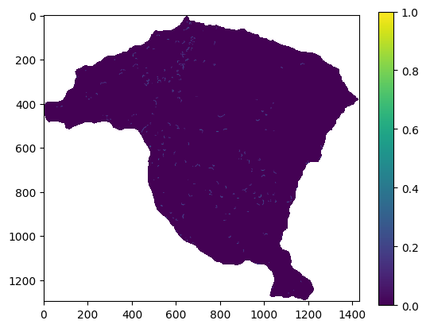
raster = rio.open('https://raw.githubusercontent.com/edieraristizabal/CartografiaGeotecnica/master/libro/data/miel/Pendiente.tif')
pendiente=raster.read(1)
pendiente=np.where(pendiente<0,np.nan,pendiente)
plt.imshow(pendiente);
plt.colorbar();
pendiente_vector=pendiente.ravel()
pendiente_vector_MenM=pendiente_vector[~np.isnan(pendiente_vector)]
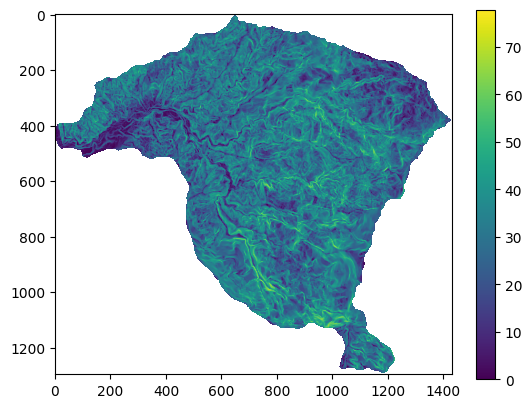
raster = rio.open('https://raw.githubusercontent.com/edieraristizabal/CartografiaGeotecnica/master/libro/data/miel/Aspecto.tif')
aspecto=raster.read(1)
aspecto=np.where(aspecto<-100,np.nan,aspecto)
aspecto_vector=aspecto.ravel()
aspecto_vector_MenM=aspecto_vector[~np.isnan(aspecto_vector)]
plt.imshow(aspecto)
plt.colorbar()
<matplotlib.colorbar.Colorbar at 0x1fc27444150>
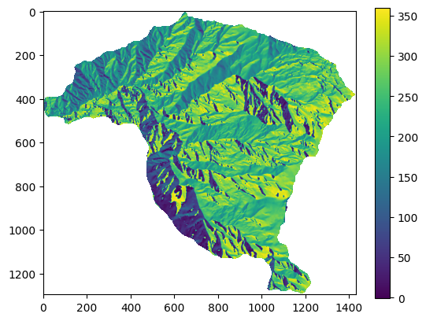
raster = rio.open('https://raw.githubusercontent.com/edieraristizabal/CartografiaGeotecnica/master/libro/data/miel/Geologia_Superficial.tif')
geologia=raster.read(1)
geologia=np.where(geologia<0,np.nan,geologia)
geologia_vector=geologia.ravel()
geologia_vector_MenM=geologia_vector[~np.isnan(geologia_vector)]
plt.imshow(geologia)
plt.colorbar();
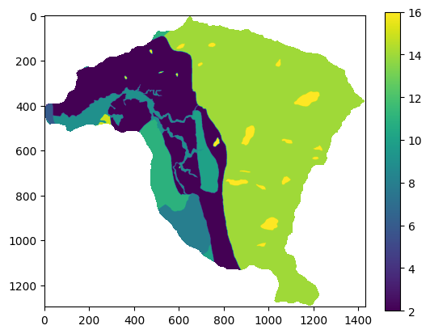
Para implementar todos lo métodos estadísticos bivariados se deben conocer para cada clase de las variables, el número de celdas que pertenecen a dicha clase y el número de celdas con MenM.
A continuación se presenta el procedimiento para el mapa de pendiente, el cual es una variable continua. Como se mencionó anteriormente en los métodos estadísticos bivariados se deben transformar las variables continuas a categóricas. En este caso el mapa de pendientes se convierte a 5 clases [0-10, 10-20, 20-30, 30-35, >35].
Para realizar este procedimiento se utiliza el vector que se generó con el mapa de pendiente, y se convierte a una serie de Pandas, de tal forma que permita iterar.
pendiente_serie=pd.Series(pendiente_vector_MenM)
ap=bp=cp=dp=ep=0
for row in pendiente_serie:
if (0 <= row) & (row < 10):
ap+=1
elif (10 <= row) & (row < 20):
bp+=1
elif (20 <= row) & (row < 30):
cp+=1
elif (30 <= row) & (row < 35):
dp+=1
if (row>=35):
ep+=1
total=ap+bp+cp+dp+ep
print("total:", totalp,ap,bp,cp,dp,ep)
pendienteconMenM=pendiente_vector_MenM*inventario_vector_MenM
ap1=bp1=cp1=dp1=ep1=0
for row in pendienteconMenM:
if (0 < row) & (row < 10):
ap1+=1
elif (10 <= row) & (row < 20):
bp1+=1
elif (20 <= row) & (row < 30):
cp1+=1
elif (30 <= row) & (row < 35):
dp1+=1
if (row>=35):
ep1+=1
total1=ap1+bp1+cp1+dp1+ep1
print("total1:", total1p,ap1,bp1,cp1,dp1,ep1)
total: 910801 53805 138684 279488 158011 280813
total1: 1620 13 108 411 301 787
Ahora se calcula el Frequency ratio para cada clase a partir de los valores estimados previamente:
w_a=(ap1/total1)/(ap/total)
w_b=(bp1/total1)/(bp/total)
w_c=(cp1/total1)/(cp/total)
w_d=(dp1/total1)/(dp/total)
w_e=(ep1/total1)/(ep/total)
print(w_a,w_b,w_c,w_d,w_e)
0.13584047790317347 0.4378303673579264 0.826774627307924 1.0709955300033418 1.5756726885555798
Finalmente se reclasifica el mapa, asignándole a cada clase el valor del Frequency ratio calculado:
pendiente_c=np.where ( (np.logical_and (pendiente>=0, pendiente<10 )),w_a,pendiente )
pendiente_c=np.where ( (np.logical_and (pendiente_c>=10, pendiente_c<20 )),w_b,pendiente_c )
pendiente_c=np.where ( (np.logical_and (pendiente_c>=20, pendiente_c<30 )),w_c,pendiente_c )
pendiente_c=np.where ( (np.logical_and (pendiente_c>=30, pendiente_c<35 )),w_d,pendiente_c )
pendiente_c=np.where ( pendiente_c>=35,w_e,pendiente_c )
fig,ax=plt.subplots(figsize=(7,6))
im=ax.imshow(pendiente_c,cmap="RdYlGn_r")
plt.colorbar(im,ax=ax,label="Peso FR")
ax.set_title("Frequency Ratio — Pesos por clase de Pendiente",fontsize=13)
ax.set_xlabel("Columna"); ax.set_ylabel("Fila")
plt.tight_layout()
print(np.unique(pendiente_c));
[0.13584048 0.43783036 0.82677466 1.0709956 1.5756727 nan]
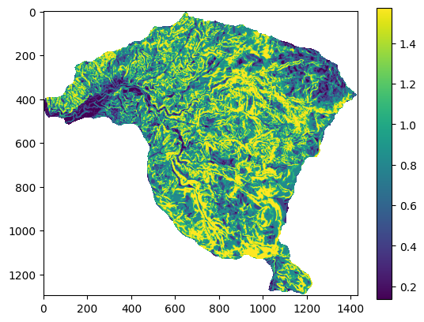
Ahora se realiza el mismo procedimiento para la variable aspecto, la cual también es continua, en este caso se divide en 4 clases [0-90, 90-180, 180-270, 270-360]:
# ── Recuento por clase de aspecto (vectorizado con pd.cut) ───────────────────
aspecto_serie = pd.Series(aspecto_vector_MenM)
bins_asp = [0, 90, 180, 270, 360]
labels_asp = ['N-NE (0-90°)', 'E-SE (90-180°)', 'S-SW (180-270°)', 'W-NW (270-360°)']
clases_asp = pd.cut(aspecto_serie, bins=bins_asp, labels=labels_asp,
include_lowest=True, right=False)
conteo_asp = clases_asp.value_counts().sort_index()
aa, ba, ca, da = conteo_asp.values
totala = conteo_asp.sum()
print('total:', totala, aa, ba, ca, da)
aspectoconMenM=aspecto_vector_MenM*inventario_vector_MenM
aa1=ba1=ca1=da1=0
for row in aspectoconMenM:
if (0 < row) & (row < 90):
aa1+=1
elif (90 <= row) & (row < 180):
ba1+=1
elif (180 <= row) & (row < 270):
ca1+=1
if (row>=270):
da1+=1
total1a=aa1+ba1+ca1+da1
print("total1:", total1a,aa1,ba1,ca1,da1)
w_a=(aa1/total1)/(aa/total)
w_b=(ba1/total1)/(ba/total)
w_c=(ca1/total1)/(ca/total)
w_d=(da1/total1)/(da/total)
print("w:", w_a,w_b,w_c,w_d)
aspecto_c=np.where ( (np.logical_and (aspecto>=0, aspecto<90 )),w_a,aspecto )
aspecto_c=np.where ( (np.logical_and (aspecto_c>=90, aspecto_c<180 )),w_b,aspecto_c )
aspecto_c=np.where ( (np.logical_and (aspecto_c>=180, aspecto_c<270 )),w_c,aspecto_c )
aspecto_c=np.where ( aspecto_c>=270,w_d,aspecto_c )
plt.imshow(aspecto_c)
plt.colorbar()
print(np.unique(aspecto_c));
total: 909599 151110 128456 306544 323489
total1: 1620 271 401 469 479
w: 1.0082879326727077 1.7550862446438882 0.8601783487146872 0.8325004563476865
[-1. 0.83250046 0.86017835 1.0082879 1.7550863 nan]
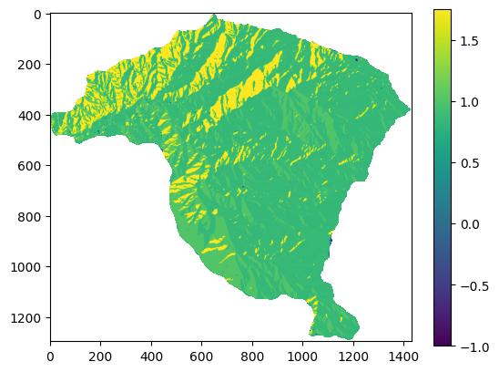
Y el mismo procedimiento para la variable geologia, la cual es categórica por lo cual ligeramente varía el procedimiento.
# ── Recuento por clase de geología (vectorizado con dict comprehension) ───────
clases_geo = [2, 4, 6, 8, 9, 10, 11, 14, 15, 16]
conteo_geo = {c: (geologia == c).sum() for c in clases_geo}
ag,bg,cg,dg,eg,fg,gg,hg,ig,jg = [conteo_geo[c] for c in clases_geo]
totalg = sum(conteo_geo.values())
print('total', totalg, ag, bg, cg, dg, eg, fg, gg, hg, ig, jg)
geologiaconMenM = geologia * inventario
conteo_geo1 = {c: (geologiaconMenM == c).sum() for c in clases_geo}
ag1,bg1,cg1,dg1,eg1,fg1,gg1,hg1,ig1,jg1 = [conteo_geo1[c] for c in clases_geo]
total1 = sum(conteo_geo1.values())
print('total con MenM', total1)
total 910801 237383 169 3060 32352 37658 22405 41720 515621 1850 18583
total1 1620 612 0 0 98 0 43 118 736 13 0
w: 1.4494735418196658 0.0 0.0 1.703073635991745 0.0 1.0790262039172254 1.5901796515275262 0.8025196993073269 3.9507550884217553 0.0
[0. 0.8025197 1.0790262 1.44947354 1.59017965 1.70307364
3.95075509 nan]
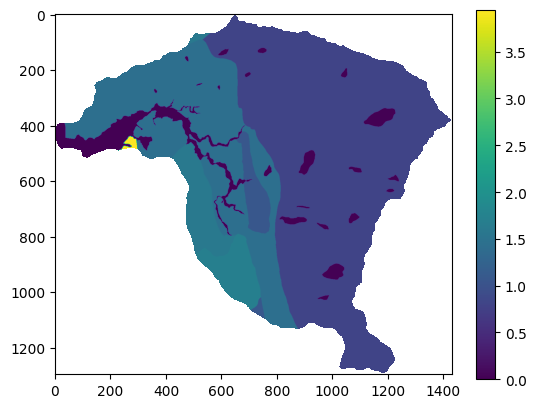
Con los mapas de cada variable reclasificados de acuerdo con el valor de Frequency ratio se procede entonces a sumar todas las variables y obtener el mapa de susceptibilidad:
IS=pendiente_c+aspecto_c+geologia_c
fig,ax=plt.subplots(figsize=(7,6))
im=ax.imshow(IS,cmap="RdYlGn_r")
plt.colorbar(im,ax=ax,label="Índice IS")
ax.set_title("Índice de Susceptibilidad — Frequency Ratio\nCuenca La Miel",fontsize=13)
ax.set_xlabel("Columna"); ax.set_ylabel("Fila")
plt.tight_layout()
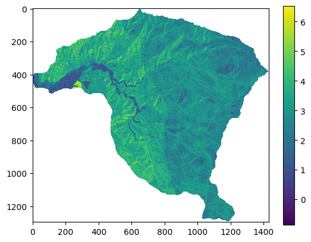
Statistical index model#
El valor del peso para cada clase en el método Statistical index model es definido como el logaritmo natural de la densidad de movimientos en masa en una clase (\(\rho_{clase}\)) dividido la densidad de deslizamientos en toda la zona de estudio (\(\rho_{total}\)), de acuerdo con la siguiente ecuación:
\(w_{ij}^n = \ln(\frac{\rho_{clase}}{\rho_{total}}) = \ln(\frac{\frac{N_{ij}}{S_{ij}}}{\frac{N}{S}}) \)
Donde \(w_{ij}^n\) es el peso de la celda \(n\) que pertenece a la clase \(i\) de la variable \(j\). \(\rho_{clase}\) es la densidad de deslizamientos de la clase \(i\) del parámetro \(j\), calculado a partir de \(N_{ij}\) como el número de pixeles con MenM en una cierta clase \(i\) del parámetro \(j\), \(S_{ij}\) como el número de pixeles de la clase \(i\) del parámetro \(j\). N es el total de celdas que corresponden a deslizamientos en todo el mapa y S es el total de celdas del área de estudio.
Finalmente la susceptibilidad a movimientos en masa de cada celda es igual a:
\(S^n = \sum w = w_{pendiente} + w_{geologia} + w_{coberturas} + ...w_{n} \)
Python#
Para el método de Statistical index se debe calcular la densidad de movimientos en masa, tanto para las clases de cada variable, como para el área total.
La densidad total es igual a:
dt=total1/total
print(dt)
0.0017810045965309987
La densidad para las 5 clases de pendiente se estiman de la siguiente manera:
w_a=np.log((ap1/ap)/dt)
w_b=np.log((bp1/bp)/dt)
w_c=np.log((cp1/cp)/dt)
w_d=np.log((dp1/dp)/dt)
w_e=np.log((ep1/ep)/dt)
print(w_a,w_b,w_c,w_d,w_e)
-1.9975946273658713 -0.8272443218321374 -0.19154372854191365 0.0672680287170693 0.4533616958660388
Con estos valores del statistical index se reclasifica el mapa de pendientes:
pendiente_c=np.where ( (np.logical_and (pendiente>=0, pendiente<10 )),w_a,pendiente )
pendiente_c=np.where ( (np.logical_and (pendiente_c>=10, pendiente_c<20 )),w_b,pendiente_c )
pendiente_c=np.where ( (np.logical_and (pendiente_c>=20, pendiente_c<30 )),w_c,pendiente_c )
pendiente_c=np.where ( (np.logical_and (pendiente_c>=30, pendiente_c<35 )),w_d,pendiente_c )
pendiente_c=np.where ( pendiente_c>=35,w_e,pendiente_c )
fig,ax=plt.subplots(figsize=(7,6))
im=ax.imshow(pendiente_c,cmap="RdYlGn_r")
plt.colorbar(im,ax=ax,label="Peso SI")
ax.set_title("Statistical Index (SI) — Pesos por clase de Pendiente",fontsize=13)
ax.set_xlabel("Columna"); ax.set_ylabel("Fila")
plt.tight_layout()
print(np.unique(pendiente_c));
[-1.9975946 -0.82724434 -0.19154373 0.06726803 0.4533617 nan]
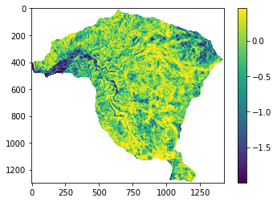
Realizamos el mismo procedimiento para la variable aspecto:
w_a=np.log((aa1/aa)/dt)
w_b=np.log((ba1/ba)/dt)
w_c=np.log((ca1/ca)/dt)
w_d=np.log((da1/da)/dt)
print("w:", w_a,w_b,w_c,w_d)
aspecto_c=np.where ( (np.logical_and (aspecto>=0, aspecto<90 )),w_a,aspecto )
aspecto_c=np.where ( (np.logical_and (aspecto_c>=90, aspecto_c<180 )),w_b,aspecto_c )
aspecto_c=np.where ( (np.logical_and (aspecto_c>=180, aspecto_c<270 )),w_c,aspecto_c )
aspecto_c=np.where ( aspecto_c>=270,w_d,aspecto_c )
fig,ax=plt.subplots(figsize=(7,6))
im=ax.imshow(aspecto_c,cmap="RdYlGn_r")
plt.colorbar(im,ax=ax,label="Peso SI")
ax.set_title("Statistical Index (SI) — Pesos por clase de Aspecto",fontsize=13)
ax.set_xlabel("Columna"); ax.set_ylabel("Fila")
plt.tight_layout()
print(np.unique(aspecto_c));
w: 0.006933187278979516 0.5611974088841332 -0.1519361180824098 -0.18464209803578424
[-1. -0.18464209 -0.15193611 0.00693319 0.5611974 nan]
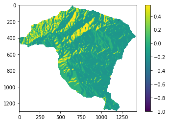
Para la variable geología se debe tener en cuenta que existen algunas clases que no presentan celdas con MenM, por lo tanto generan un error al calcular el logaritmo. Para superar esto se le asigna un valor de 1 a dichas clases.
bg1=cg1=eg1=jg1=1 #clases que obtuvieron 0 celdas con movimientos en masa
w_a=np.log((ag1/ag)/dt)
w_b=np.log((bg1/bg)/dt)
w_c=np.log((cg1/cg)/dt)
w_d=np.log((dg1/dg)/dt)
w_e=np.log((eg1/eg)/dt)
w_f=np.log((fg1/fg)/dt)
w_g=np.log((gg1/gg)/dt)
w_h=np.log((hg1/hg)/dt)
w_i=np.log((ig1/ig)/dt)
w_j=np.log((jg1/jg)/dt)
print("w:", w_a,w_b,w_c,w_d,w_e,w_f,w_g,w_h,w_i,w_j)
geologia_c=np.where ( geologia==2,w_a,geologia )
geologia_c=np.where ( geologia_c==4,w_b,geologia_c )
geologia_c=np.where ( geologia_c==6,w_c,geologia_c )
geologia_c=np.where ( geologia_c==8,w_d,geologia_c )
geologia_c=np.where ( geologia_c==9,w_e,geologia_c )
geologia_c=np.where ( geologia_c==10,w_f,geologia_c )
geologia_c=np.where ( geologia_c==11,w_g,geologia_c )
geologia_c=np.where ( geologia_c==14,w_h,geologia_c )
geologia_c=np.where ( geologia_c==15,w_i,geologia_c )
geologia_c=np.where ( geologia_c==16,w_j,geologia_c )
plt.imshow(geologia_c)
plt.colorbar()
print(np.unique(geologia_c));
w: 0.36987982682432763 1.200678978884011 -1.695592501139342 0.5311140506574584 -4.205723000249289 0.07473838228040365 0.4625264091580406 -0.22131946592927398 1.3725861331962508 -3.499424769466566
[-4.205723 -3.49942477 -1.6955925 -0.22131947 0.07473838 0.36987983
0.46252641 0.53111405 1.20067898 1.37258613 nan]
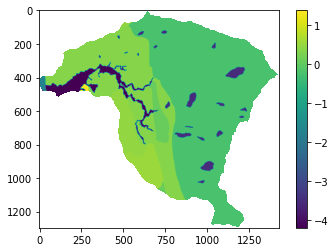
Con los mapas de cada variable reclasificados de acuerdo con el valor de Statistical index se procede entonces a sumar todas las variables y obtener el mapa de susceptibilidad:
IS=pendiente_c+aspecto_c+geologia_c
fig,ax=plt.subplots(figsize=(7,6))
im=ax.imshow(IS,cmap="RdYlGn_r")
plt.colorbar(im,ax=ax,label="Índice IS")
ax.set_title("Índice de Susceptibilidad — Statistical Index\nCuenca La Miel",fontsize=13)
ax.set_xlabel("Columna"); ax.set_ylabel("Fila")
plt.tight_layout()
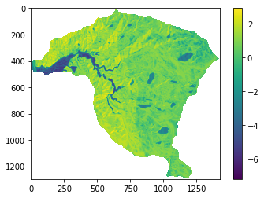
Peso de la evidencia (WoE)#
El Peso de la Evidencia, basado en la teoría de la probabilidad Bayesiana, analiza la relación entre las áreas afectadas por los movimientos en masa y la distribución espacial de los factores condicionantes del terreno. Este método arroja los pesos de las clases que conforman las variables condicionantes, indicando la presencia e influencia de la clase como parámetro en la ocurrencia del movimiento en masa. Los pesos positivos (W+) indican la presencia de la clase como parámetro que favorece los movimientos en masa y su magnitud indica su correlación. El peso negativo (W-) indica la ausencia de la clase en la ocurrencia de movimiento en masa.
Dónde \(N_{pix1}\) es el número de pixeles con movimientos en masa (\(S\)) en la clase \(B_i\), \(N_{pix2}\) número de pixeles con movimientos en masa que no están presentes en la misma clase \(\hat{B}_i\), \(N_{pix3}\) es el número de pixeles en la clase que no hay movimientos en masa \(\hat{S}\) y \(N_{pix4}\) es el número de pixeles en la clase donde no hay movimientos en masa \(\hat{S}\) y que no está presente en la clase \(\hat{B}_i\).

Figura 55 Método de Peso de la Evidencia.#
\(C = W^+ - W^-\)
Y el contraste C refleja el espacio de asociación respecto a la clase en la predicción del movimiento en masa, la cual es cero cuando la clase no afecta, es positivo cuando existe una correlación directa y negativo cuando existe una correlación inversa con la distribución de movimientos en masa.
La formulación bayesiana del WoE se apoya en un supuesto fundamental: que los mapas de factores condicionantes (pendiente, litología, uso del suelo, etc.) son condicionalmente independientes entre sí con respecto a la ocurrencia de movimientos en masa. Si este supuesto se viola, el modelo tiende a sobreestimar las probabilidades posteriores. Para evaluar esta condición se utilizan pruebas como la Razón de Independencia Condicional (CI Ratio), que compara el número de movimientos en masa predicho (\(T\), la suma de las probabilidades posteriores ponderada por el área de cada celda) con el número observado (\(n\)); si \(T\) supera a \(n\) entre un 10% y un 15%, existe una violación significativa de la independencia condicional, lo que indica que las variables están altamente correlacionadas entre sí. De forma más rigurosa, la prueba de Agterberg-Cheng aplica un contraste de hipótesis formal sobre la diferencia \(T-n\), mediante el estadístico \(Z=(T-n)/\sigma_T\), donde \(\sigma_T\) es la desviación estándar de la suma predicha; ambas pruebas suelen implementarse en herramientas de modelado espacial como ArcSDM.
Python#
Para calcular el \(W^+\) (wp), \(W^-\) (wn), y \(C\) de cada clase se utilizan las siguientes ecuaciones del método WoE: \(N_{pix1}\)=a1, son las celdas que pertenecen a la clase a y tienen MenM. \(N_{pix2}\)=total1-a1, son las celdas que no pertenecen a la clase a y que tienen MenM, \(N_{pix3}\)=a-a1, son las celdas que pertenecen a la clase a pero que no tienen MenM. y \(N_{pix4}\)=(b+c+d+e)-(b1+c1+d1+e1), son las celdas que no pertenecen a la clase a y que no tienen MenM.
x1=ap1
x2=total1-ap1
x3=ap-ap1
x4=(bp+cp+dp+ep)-(bp1+cp1+dp1+ep1)
Con los valores de x1, x2, x3, x4 se calculan el \(W^+\) (wp), el \(W^-\) (Wn) y el Contraste de la siguiente forma:
wp_a=np.log((x1/(x1+x2))/(x3/(x3+x4)))
wn_a=np.log((x2/(x1+x2))/(x4/(x3+x4)))
c=np.log(((x1/(x1+x2))/(x3/(x3+x4)))/((x2/(x1+x2))/(x4/(x3+x4))))
print(wp_a, wn_a, c)
-1.9978126337233664 0.05293079554963469 -2.0507434292730014
Con el valor del contraste para la clase \(a\) del mapa de pendiente, se genera un mapa de pendiente reclasificado donde todas las celdas que pertenezcan a la clase a ahora tengan el valor del contraste de \(a\).
pendiente_c=np.where ( (np.logical_and (pendiente>=0, pendiente<10 )),c,pendiente );
Ahora se repite el mismo procedimiento para cada una de las clases en las cuales se clasificó el mapa de pendientes.
#Clase b
x1=bp1
x2=total1-bp1
x3=bp-bp1
x4=(ap+cp+dp+ep)-(ap1+cp1+dp1+ep1)
wp_b=np.log((x1/(x1+x2))/(x3/(x3+x4)))
wn_b=np.log((x2/(x1+x2))/(x4/(x3+x4)))
cont=np.log(((x1/(x1+x2))/(x3/(x3+x4)))/((x2/(x1+x2))/(x4/(x3+x4))))
pendiente_c=np.where ( (np.logical_and (pendiente_c>=10, pendiente_c<20 )),cont,pendiente_c )
#Clase c
x1=cp1
x2=total1-cp1
x3=cp-cp1
x4=(ap+bp+dp+ep)-(ap1+bp1+dp1+ep1)
wp_c=np.log((x1/(x1+x2))/(x3/(x3+x4)))
wn_c=np.log((x2/(x1+x2))/(x4/(x3+x4)))
cont=np.log(((x1/(x1+x2))/(x3/(x3+x4)))/((x2/(x1+x2))/(x4/(x3+x4))))
pendiente_c=np.where ( (np.logical_and (pendiente_c>=10, pendiente_c<20 )),cont,pendiente_c )
#Clase d
x1=dp1
x2=total1-dp1
x3=dp-dp1
x4=(ap+bp+cp+ep)-(ap1+bp1+cp1+ep1)
wp_d=np.log((x1/(x1+x2))/(x3/(x3+x4)))
wn_d=np.log((x2/(x1+x2))/(x4/(x3+x4)))
cont=np.log(((x1/(x1+x2))/(x3/(x3+x4)))/((x2/(x1+x2))/(x4/(x3+x4))))
pendiente_c=np.where ( (np.logical_and (pendiente_c>=20, pendiente_c<30 )),cont,pendiente_c )
#Clase e
x1=ep1
x2=total1-ep1
x3=ep-ep1
x4=(ap+bp+cp+dp)-(ap1+bp1+cp1+dp1)
wp_e=np.log((x1/(x1+x2))/(x3/(x3+x4)))
wn_e=np.log((x2/(x1+x2))/(x4/(x3+x4)))
cont=np.log(((x1/(x1+x2))/(x3/(x3+x4)))/((x2/(x1+x2))/(x4/(x3+x4))))
pendiente_c=np.where (pendiente_c>=30,cont,pendiente_c)
Se procede a imprimir cada uno de los \(W^+\) y \(W^-\) para detectar valores infinitos que se obtienen de logaritmos de 0, es decir que provienen de clases donde algunos de los numeradores (x1, x2, x3, o x4) es 0.
print(wp_a, wn_a, wp_b, wn_b, wp_c, wn_c, wp_d, wn_d, wp_e, wn_e)
-1.9978126337233664 0.05293079554963469 -0.8269249184231674 0.09637540215921472 -0.190531748869874 0.0740267315295358 0.06871512729071115 -0.015040700202127994 0.45570855845755603 -0.2969812410286435
A continuación se presenta el mapa de pendiente reclasificado por el Contraste (C)
fig,ax=plt.subplots(figsize=(7,6))
im=ax.imshow(pendiente_c,cmap="RdYlGn_r")
plt.colorbar(im,ax=ax,label="Peso WoE")
ax.set_title("Weight of Evidence (WoE) — Pesos por clase de Pendiente",fontsize=13)
ax.set_xlabel("Columna"); ax.set_ylabel("Fila")
plt.tight_layout()
print(np.unique(pendiente_c));
[-2.0507433 -0.9233003 0.08375583 0.7526898 nan]
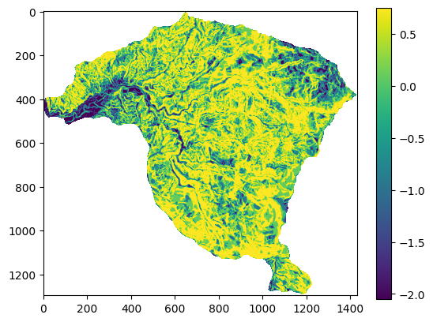
Este mismo procedimiento se realiza para la variable aspecto.
#Clase a
x1=aa1
x2=total1-aa1
x3=aa-aa1
x4=(ba+ca+da)-(ba1+ca1+da1)
wp_a=np.log((x1/(x1+x2))/(x3/(x3+x4)))
wn_a=np.log((x2/(x1+x2))/(x4/(x3+x4)))
cont=np.log(((x1/(x1+x2))/(x3/(x3+x4)))/((x2/(x1+x2))/(x4/(x3+x4))))
aspecto_c=np.where ((np.logical_and (aspecto>=0, aspecto<90 )),cont,aspecto )
#Clase b
x1=ba1
x2=total1-ba1
x3=ba-ba1
x4=(aa+ca+da)-(aa1+ca1+da1)
wp_b=np.log((x1/(x1+x2))/(x3/(x3+x4)))
wn_b=np.log((x2/(x1+x2))/(x4/(x3+x4)))
cont=np.log(((x1/(x1+x2))/(x3/(x3+x4)))/((x2/(x1+x2))/(x4/(x3+x4))))
aspecto_c=np.where ((np.logical_and (aspecto_c>=90, aspecto_c<180 )),cont,aspecto_c )
#Clase c
x1=ca1
x2=total1-ca1
x3=ca-ca1
x4=(aa+ba+da)-(aa1+ba1+da1)
wp_c=np.log((x1/(x1+x2))/(x3/(x3+x4)))
wn_c=np.log((x2/(x1+x2))/(x4/(x3+x4)))
cont=np.log(((x1/(x1+x2))/(x3/(x3+x4)))/((x2/(x1+x2))/(x4/(x3+x4))))
aspecto_c=np.where ((np.logical_and (aspecto_c>=180, aspecto_c<270 )),cont,aspecto_c )
#Clase d
x1=da1
x2=total1-da1
x3=da-da1
x4=(aa+ba+ca)-(aa1+ba1+ca1)
wp_d=np.log((x1/(x1+x2))/(x3/(x3+x4)))
wn_d=np.log((x2/(x1+x2))/(x4/(x3+x4)))
cont=np.log(((x1/(x1+x2))/(x3/(x3+x4)))/((x2/(x1+x2))/(x4/(x3+x4))))
aspecto_c=np.where (aspecto_c>=270,cont,aspecto_c )
print(wp_a, wn_a, wp_b, wn_b, wp_c, wn_c, wp_d, wn_d)
0.006945600406864839 -0.0013894983310093806 0.5625413905302987 -0.13237052720363568 -0.15218757915959064 0.06932826692215219 -0.18494286273071125 0.08914131784141605
A continuación se presenta el mapa de aspecto reclasificado por el Contraste (C)
fig,ax=plt.subplots(figsize=(7,6))
im=ax.imshow(aspecto_c,cmap="RdYlGn_r")
plt.colorbar(im,ax=ax,label="Peso WoE")
ax.set_title("Weight of Evidence (WoE) — Pesos por clase de Aspecto",fontsize=13)
ax.set_xlabel("Columna"); ax.set_ylabel("Fila")
plt.tight_layout()
print(np.unique(aspecto_c));
[-1. -0.27408418 -0.22151585 0.0083351 0.6949119 nan]
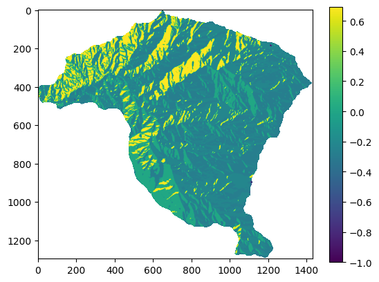
En el método Peso de la evidencia se debe tener en cuenta que las clases que no presentan movimientos en masa generan un problema matemático, ya que no se puede estimar el logaritmo natural de cero. Por lo tanto, se debe proceder a esas clases donde se obtuvo cero celdas asignarles un valor de 1, de tal forma que se pueda ejecutar el cálculo.
bg1=cg1=eg1=jg1=1 #clases que obtuvieron 0 celdas con movimientos en masa
#Clase a
x1=ag1
x2=total1-ag1
x3=ag-ag1
x4=(bg+cg+dg+eg+fg+gg+hg+ig+jg)-(bg1+cg1+dg1+eg1+fg1+gg1+hg1+ig1+jg1)
wp_a=np.log((x1/(x1+x2))/(x3/(x3+x4)))
wn_a=np.log((x2/(x1+x2))/(x4/(x3+x4)))
cont=np.log(((x1/(x1+x2))/(x3/(x3+x4)))/((x2/(x1+x2))/(x4/(x3+x4))))
geologia_c=np.where(geologia==2,cont,geologia)
#Clase b
x1=bg1
x2=total1-bg1
x3=bg-bg1
x4=(ag+cg+dg+eg+fg+gg+hg+ig+jg)-(ag1+cg1+dg1+eg1+fg1+gg1+hg1+ig1+jg1)
wp_b=np.log((x1/(x1+x2))/(x3/(x3+x4)))
wn_b=np.log((x2/(x1+x2))/(x4/(x3+x4)))
cont=np.log(((x1/(x1+x2))/(x3/(x3+x4)))/((x2/(x1+x2))/(x4/(x3+x4))))
geologia_c=np.where (geologia_c==4,cont,geologia_c)
#Clase c
x1=cg1
x2=total1-cg1
x3=cg-cg1
x4=(ag+bg+dg+eg+fg+gg+hg+ig+jg)-(ag1+bg1+dg1+eg1+fg1+gg1+hg1+ig1+jg1)
wp_c=np.log((x1/(x1+x2))/(x3/(x3+x4)))
wn_c=np.log((x2/(x1+x2))/(x4/(x3+x4)))
cont=np.log(((x1/(x1+x2))/(x3/(x3+x4)))/((x2/(x1+x2))/(x4/(x3+x4))))
geologia_c=np.where (geologia_c==6,cont,geologia_c)
#Clase d
x1=dg1
x2=total1-dg1
x3=dg-dg1
x4=(ag+bg+cg+eg+fg+gg+hg+ig+jg)-(ag1+bg1+cg1+eg1+fg1+gg1+hg1+ig1+jg1)
wp_d=np.log((x1/(x1+x2))/(x3/(x3+x4)))
wn_d=np.log((x2/(x1+x2))/(x4/(x3+x4)))
cont=np.log(((x1/(x1+x2))/(x3/(x3+x4)))/((x2/(x1+x2))/(x4/(x3+x4))))
geologia_c=np.where (geologia_c==8,cont,geologia_c)
#Clase e
x1=eg1
x2=total1-eg1
x3=eg-eg1
x4=(ag+bg+cg+dg+fg+gg+hg+ig+jg)-(ag1+bg1+cg1+dg1+fg1+gg1+hg1+ig1+jg1)
wp_e=np.log((x1/(x1+x2))/(x3/(x3+x4)))
wn_e=np.log((x2/(x1+x2))/(x4/(x3+x4)))
cont=np.log(((x1/(x1+x2))/(x3/(x3+x4)))/((x2/(x1+x2))/(x4/(x3+x4))))
geologia_c=np.where (geologia_c==9,cont,geologia_c)
#Clase f
x1=fg1
x2=total1-fg1
x3=fg-fg1
x4=(ag+bg+cg+dg+eg+gg+hg+ig+jg)-(ag1+bg1+cg1+dg1+eg1+gg1+hg1+ig1+jg1)
wp_f=np.log((x1/(x1+x2))/(x3/(x3+x4)))
wn_f=np.log((x2/(x1+x2))/(x4/(x3+x4)))
cont=np.log(((x1/(x1+x2))/(x3/(x3+x4)))/((x2/(x1+x2))/(x4/(x3+x4))))
geologia_c=np.where (geologia_c==10,cont,geologia_c)
#Clase g
x1=gg1
x2=total1-gg1
x3=gg-gg1
x4=(ag+bg+cg+dg+fg+eg+hg+ig+jg)-(ag1+bg1+cg1+dg1+fg1+eg1+hg1+ig1+jg1)
wp_g=np.log((x1/(x1+x2))/(x3/(x3+x4)))
wn_g=np.log((x2/(x1+x2))/(x4/(x3+x4)))
cont=np.log(((x1/(x1+x2))/(x3/(x3+x4)))/((x2/(x1+x2))/(x4/(x3+x4))))
geologia_c=np.where (geologia_c==11,cont,geologia_c)
#Clase h
x1=hg1
x2=total1-hg1
x3=hg-hg1
x4=(ag+bg+cg+dg+fg+gg+eg+ig+jg)-(ag1+bg1+cg1+dg1+fg1+gg1+eg1+ig1+jg1)
wp_h=np.log((x1/(x1+x2))/(x3/(x3+x4)))
wn_h=np.log((x2/(x1+x2))/(x4/(x3+x4)))
cont=np.log(((x1/(x1+x2))/(x3/(x3+x4)))/((x2/(x1+x2))/(x4/(x3+x4))))
geologia_c=np.where (geologia_c==14,cont,geologia_c)
#Clase i
x1=ig1
x2=total1-ig1
x3=ig-ig1
x4=(ag+bg+cg+dg+fg+gg+hg+eg+jg)-(ag1+bg1+cg1+dg1+fg1+gg1+hg1+eg1+jg1)
wp_i=np.log((x1/(x1+x2))/(x3/(x3+x4)))
wn_i=np.log((x2/(x1+x2))/(x4/(x3+x4)))
cont=np.log(((x1/(x1+x2))/(x3/(x3+x4)))/((x2/(x1+x2))/(x4/(x3+x4))))
geologia_c=np.where (geologia_c==15,cont,geologia_c)
#Clase j
x1=jg1
x2=total1-jg1
x3=jg-jg1
x4=(ag+bg+cg+dg+fg+gg+hg+eg+ig)-(ag1+bg1+cg1+dg1+fg1+gg1+hg1+eg1+ig1)
wp_j=np.log((x1/(x1+x2))/(x3/(x3+x4)))
wn_j=np.log((x2/(x1+x2))/(x4/(x3+x4)))
cont=np.log(((x1/(x1+x2))/(x3/(x3+x4)))/((x2/(x1+x2))/(x4/(x3+x4))))
geologia_c=np.where (geologia_c==16,cont,geologia_c)
print(wp_a, wn_a, wp_b, wn_b, wp_c, wn_c, wp_d, wn_d, wp_e, wn_e, wp_f, wn_f, wp_g, wn_g, wp_h, wn_h, wp_i, wn_i, wp_j, wn_j)
0.3719972196859115 -0.1727805096556783 1.2061496660464985 -0.0004326749733077856 -1.6957296987011459 0.002752779757529654 0.5336837785798685 -0.026280284312496238 -4.206160493471516 0.041683506509891124 0.07619539243600662 -0.0019984389181064706 0.4648947478986488 -0.02879076462367898 -0.2203550895609917 0.22972367754746886 1.3791739176961686 -0.006034509849750083 -3.4998350037515005 0.02003254146609238
Para este caso de la variable geologia se obtienen valores de 0 para las clases b, c, e y j. Por lo tanto se debe asignar valores de 1 y volver a correr el código.
fig,ax=plt.subplots(figsize=(7,6))
im=ax.imshow(geologia_c,cmap="RdYlGn_r")
plt.colorbar(im,ax=ax,label="Peso WoE")
ax.set_title("Weight of Evidence (WoE) — Pesos por clase de Geología",fontsize=13)
ax.set_xlabel("Columna"); ax.set_ylabel("Fila")
plt.tight_layout()
print(np.unique(geologia_c));
[-4.247844 -3.51986755 -1.69848248 -0.45007877 0.07819383 0.49368551
0.54477773 0.55996406 1.20658234 1.38520843 nan]
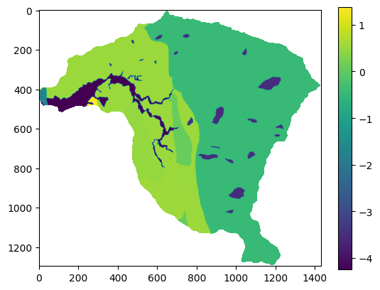
Finalmente se calcula el Índice de Susceptibilidad (IS), el cual corresponde a la suma de los mapas reclasificados con el valor del Contraste, de la siguiente forma.
IS=pendiente_c+aspecto_c+geologia_c
fig,ax=plt.subplots(figsize=(7,6))
im=ax.imshow(IS,cmap="RdYlGn_r")
plt.colorbar(im,ax=ax,label="Índice IS")
ax.set_title("Índice de Susceptibilidad — Weight of Evidence\nCuenca La Miel",fontsize=13)
ax.set_xlabel("Columna"); ax.set_ylabel("Fila")
plt.tight_layout()
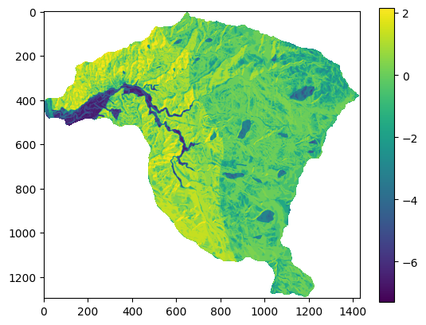
Evidential Belief Funtion (EBF)#
El modelo EBF (Dempster - Shafer) consiste en el grado de Belief (Bel), Disbelief (Dis), Uncertainty (Unc) y Plausibility (Pls), con valores entre 0 y 1. Bels y Pls representan el límite de probabilidad Bayesiana inferior y superior. Mientras que, Pls es mayor o igual que Bel, y Unc es la diferencia entre ellos, indicando la incertidumbre del resultado.
\(Wc_{ij}L=\frac{N(c \cap L)/N(c)}{N(L)-N(c \cap L)/N(S)-N(c)}\)
\(Belc_{ij}=\frac{Wc_{ij}L}{\sum{Wc_{ij}L}}\)
\(Wc_{ij} \bar L=\frac{N(c)-N(c \cap L)/N(c)}{N(S)-N(L)-N(c)-N(c \cap L)/N(S)-N(c)}\)
\(Disc_{ij}=\frac{Wc_{ij} \bar L}{\sum{Wc_{ij} \bar L}}\)
\(Uncc_{ij}=1-Belc_{ij} - Disc_{ij}\)

Figura 56 Método Evidential Belief Funtion.#

Figura 57 Ejemplo del cálculo de Evidential Belief Funtion.#
Python#
Para calcular el Belief de las 5 clases de la variable pendiente se utiliza:
a=(ap1/ap)/((total1-ap1)/(total-ap))
b=(bp1/bp)/((total1-bp1)/(total-bp))
c=(cp1/cp)/((total1-cp1)/(total-cp))
d=(dp1/dp)/((total1-dp1)/(total-dp))
e=(ep1/ep)/((total1-ep1)/(total-ep))
b_a=a/(a+b+c+d+e)
b_b=b/(a+b+c+d+e)
b_c=c/(a+b+c+d+e)
b_d=d/(a+b+c+d+e)
b_e=e/(a+b+c+d+e)
print("Belief:", b_a, b_b, b_c, b_d, b_e)
Belief: 0.028625875395254366 0.08834945227321032 0.1705973298301404 0.24153682967696555 0.47089051282442923
El Disbelief para cada una de las clases de la variable pendiente se calcula de la siguiente forma:
a=((ap-ap1)/ap)/((total-total1-ap-ap1)/(total-ap))
b=((bp-bp1)/bp)/((total-total1-bp-bp1)/(total-bp))
c=((cp-cp1)/cp)/((total-total1-cp-cp1)/(total-cp))
d=((dp-dp1)/dp)/((total-total1-dp-dp1)/(total-dp))
e=((ep-ep1)/ep)/((total-total1-ep-ep1)/(total-ep))
d_a=a/(a+b+c+d+e)
d_b=b/(a+b+c+d+e)
d_c=c/(a+b+c+d+e)
d_d=d/(a+b+c+d+e)
d_e=e/(a+b+c+d+e)
print("Disbelief:", d_a, d_b, d_c, d_d, d_e)
Disbelief: 0.20007122276845485 0.20003037043373678 0.20008822829335968 0.19986779103655192 0.19994238746789678
Finalmente Uncertainty se obtiene de:
U_a=1-b_a-d_a
U_b=1-b_b-d_b
U_c=1-b_c-d_c
U_d=1-b_d-d_d
U_e=1-b_e-d_e
print("Uncertainty:", U_a, U_b, U_c, U_d, U_e)
Uncertainty: 0.7713029018362907 0.7116201772930528 0.6293144418764999 0.5585953792864825 0.32916709970767405
En este caso se utilizará el Belief para calcular el mapa de susceptibilidad, por lo tantos se reclasifica la clase con dicho valor:
pendiente_c=np.where ( (np.logical_and (pendiente>=0, pendiente<10 )),b_a,pendiente )
pendiente_c=np.where ( (np.logical_and (pendiente_c>=10, pendiente_c<20 )),b_b,pendiente_c )
pendiente_c=np.where ( (np.logical_and (pendiente_c>=20, pendiente_c<30 )),b_c,pendiente_c )
pendiente_c=np.where ( (np.logical_and (pendiente_c>=30, pendiente_c<35 )),b_d,pendiente_c )
pendiente_c=np.where ( pendiente_c>=35,b_e,pendiente_c )
fig,ax=plt.subplots(figsize=(7,6))
im=ax.imshow(pendiente_c,cmap="RdYlGn_r")
plt.colorbar(im,ax=ax,label="Probabilidad Bayesiana")
ax.set_title("Probabilidad Bayesiana — Pesos por clase de Pendiente",fontsize=13)
ax.set_xlabel("Columna"); ax.set_ylabel("Fila")
plt.tight_layout()
print(np.unique(pendiente_c));
[0.02862588 0.08834945 0.17059733 0.24153683 0.47089052 nan]
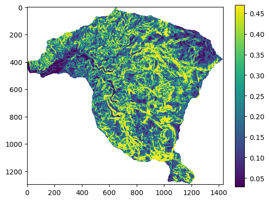
Se realiza el mismo procedimiento para la variable aspecto:
a=(aa1/aa)/((total1-aa1)/(total-aa))
b=(ba1/ba)/((total1-ba1)/(total-ba))
c=(ca1/ca)/((total1-ca1)/(total-ca))
d=(da1/da)/((total1-da1)/(total-da))
b_a=a/(a+b+c+d)
b_b=b/(a+b+c+d)
b_c=c/(a+b+c+d)
b_d=d/(a+b+c+d)
print("Belief:", b_a, b_b, b_c, b_d)
a=((aa-aa1)/aa)/((total-total1-aa-aa1)/(total-aa))
b=((ba-ba1)/ba)/((total-total1-ba-ba1)/(total-ba))
c=((ca-ca1)/ca)/((total-total1-ca-ca1)/(total-ca))
d=((da-da1)/da)/((total-total1-da-da1)/(total-da))
d_a=a/(a+b+c+d)
d_b=b/(a+b+c+d)
d_c=c/(a+b+c+d)
d_d=d/(a+b+c+d)
print("Disbelief:", d_a, d_b, d_c, d_d)
U_a=1-b_a-d_a
U_b=1-b_b-d_b
U_c=1-b_c-d_c
U_d=1-b_d-d_d
print("Uncertainty:", U_a, U_b, U_c, U_d)
aspecto_c=np.where ( (np.logical_and (aspecto>=0, aspecto<90 )),b_a,aspecto )
aspecto_c=np.where ( (np.logical_and (aspecto_c>=90, aspecto_c<180 )),b_b,aspecto_c )
aspecto_c=np.where ( (np.logical_and (aspecto_c>=180, aspecto_c<270 )),b_c,aspecto_c )
aspecto_c=np.where ( aspecto_c>=270,b_d,aspecto_c )
plt.imshow(aspecto_c)
plt.colorbar()
print(np.unique(aspecto_c));
Belief: 0.22057061602011757 0.4375534606380272 0.175417504448167 0.1664584188936883
Disbelief: 0.24991245472690599 0.2496034442619465 0.2502212194919437 0.2502628815192039
Uncertainty: 0.5295169292529764 0.3128430951000264 0.5743612760598893 0.5832786995871078
[-1. 0.16645841 0.1754175 0.22057061 0.43755347 nan]
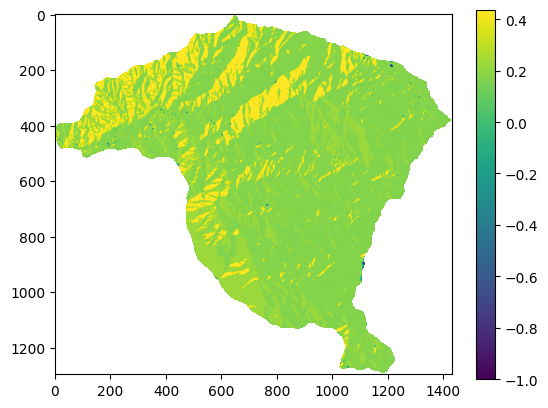
Para la variable geologia se desarrolla de la siguiente forma:
a=(ag1/ag)/((total1-ag1)/(total-ag))
b=(bg1/bg)/((total1-bg1)/(total-bg))
c=(cg1/cg)/((total1-cg1)/(total-cg))
d=(dg1/dg)/((total1-dg1)/(total-dg))
e=(eg1/eg)/((total1-eg1)/(total-eg))
f=(fg1/fg)/((total1-fg1)/(total-fg))
g=(gg1/gg)/((total1-gg1)/(total-gg))
h=(hg1/hg)/((total1-hg1)/(total-hg))
i=(ig1/ig)/((total1-ig1)/(total-ig))
j=(jg1/jg)/((total1-jg1)/(total-jg))
b_a=a/(a+b+c+d+e+f+g+h+i+j)
b_b=b/(a+b+c+d+e+f+g+h+i+j)
b_c=c/(a+b+c+d+e+f+g+h+i+j)
b_d=d/(a+b+c+d+e+f+g+h+i+j)
b_e=e/(a+b+c+d+e+f+g+h+i+j)
b_f=f/(a+b+c+d+e+f+g+h+i+j)
b_g=g/(a+b+c+d+e+f+g+h+i+j)
b_h=h/(a+b+c+d+e+f+g+h+i+j)
b_i=i/(a+b+c+d+e+f+g+h+i+j)
b_j=j/(a+b+c+d+e+f+g+h+i+j)
print("Belief:", b_a, b_b, b_c, b_d, b_e, b_f, b_g, b_h, b_i, b_j)
a=((ag-ag1)/ag)/((total-total1-ag-ag1)/(total-ag))
b=((bg-bg1)/bg)/((total-total1-bg-bg1)/(total-bg))
c=((cg-cg1)/cg)/((total-total1-cg-cg1)/(total-cg))
d=((dg-dg1)/dg)/((total-total1-dg-dg1)/(total-dg))
e=((eg-eg1)/eg)/((total-total1-eg-eg1)/(total-eg))
f=((fg-fg1)/fg)/((total-total1-fg-fg1)/(total-fg))
g=((gg-gg1)/gg)/((total-total1-gg-gg1)/(total-gg))
h=((hg-hg1)/hg)/((total-total1-hg-hg1)/(total-hg))
i=((ig-ig1)/ig)/((total-total1-ig-ig1)/(total-ig))
j=((jg-jg1)/jg)/((total-total1-jg-jg1)/(total-jg))
d_a=a/(a+b+c+d+e+f+g+h+i+j)
d_b=b/(a+b+c+d+e+f+g+h+i+j)
d_c=c/(a+b+c+d+e+f+g+h+i+j)
d_d=d/(a+b+c+d+e+f+g+h+i+j)
d_e=e/(a+b+c+d+e+f+g+h+i+j)
d_f=f/(a+b+c+d+e+f+g+h+i+j)
d_g=g/(a+b+c+d+e+f+g+h+i+j)
d_h=h/(a+b+c+d+e+f+g+h+i+j)
d_i=i/(a+b+c+d+e+f+g+h+i+j)
d_j=j/(a+b+c+d+e+f+g+h+i+j)
print("Disbelief:", d_a, d_b, d_c, d_d, d_e, d_f, d_g, d_h, d_i, d_j)
U_a=1-b_a-d_a
U_b=1-b_b-d_b
U_c=1-b_c-d_c
U_d=1-b_d-d_d
U_e=1-b_e-d_e
U_f=1-b_f-d_f
U_g=1-b_g-d_g
U_h=1-b_h-d_h
U_i=1-b_i-d_i
U_j=1-b_j-d_j
print("Uncertainty:", U_a, U_b, U_c, U_d, U_e, U_f, U_g, U_h, U_i, U_j)
geologia_c=np.where ( geologia==2,b_a,geologia )
geologia_c=np.where ( geologia_c==4,b_b,geologia_c )
geologia_c=np.where ( geologia_c==6,b_c,geologia_c )
geologia_c=np.where ( geologia_c==8,b_d,geologia_c )
geologia_c=np.where ( geologia_c==9,b_e,geologia_c )
geologia_c=np.where ( geologia_c==10,b_f,geologia_c )
geologia_c=np.where ( geologia_c==11,b_g,geologia_c )
geologia_c=np.where ( geologia_c==14,b_h,geologia_c )
geologia_c=np.where ( geologia_c==15,b_i,geologia_c )
geologia_c=np.where ( geologia_c==16,b_j,geologia_c )
plt.imshow(geologia_c)
plt.colorbar()
print(np.unique(geologia_c));
Belief: 0.1199707236495513 0.23182412864291702 0.012762711682540034 0.12178004327296854 0.0009975405497327063 0.07530914038478176 0.11399277135102051 0.044446666180287905 0.27685062024542095 0.002065654040779134
Disbelief: 0.10008364483089074 0.09959527456876677 0.100155931196134 0.099902193721023 0.10019311443310329 0.10000502102163039 0.09992672976273735 0.10046596811513288 0.09948572292492794 0.10018639942565356
Uncertainty: 0.779945631519558 0.6685805967883163 0.887081357121326 0.7783177630060084 0.898809345017164 0.8246858385935878 0.7860804988862422 0.8550873657045792 0.6236636568296511 0.8977479465335673
[0.00099754 0.00206565 0.01276271 0.04444667 0.07530914 0.11399277
0.11997072 0.12178004 0.23182413 0.27685062 nan]
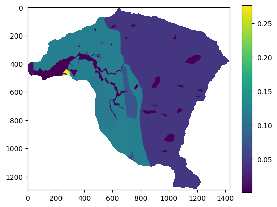
Con los mapas de cada variable reclasificados de acuerdo con el valor de Belief se procede entonces a sumar todas las variables y obtener el mapa de susceptibilidad:
IS=pendiente_c+aspecto_c+geologia_c
fig,ax=plt.subplots(figsize=(7,6))
im=ax.imshow(IS,cmap="RdYlGn_r")
plt.colorbar(im,ax=ax,label="Índice IS")
ax.set_title("Índice de Susceptibilidad — Probabilidad Bayesiana\nCuenca La Miel",fontsize=13)
ax.set_xlabel("Columna"); ax.set_ylabel("Fila")
plt.tight_layout()
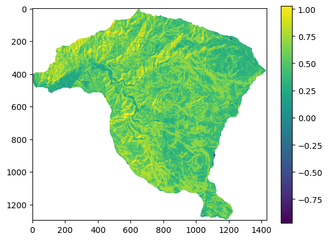
Certainty Factor (CF)#
El valor de CF varía entre -1 y +1. Un valor positivo significa un incremento en la certidumbre de la ocurrencia de deslizamientos, mientras que un valor negativo corresponde a una reducción en dicha certidumbre. Un valor cercano a 0 significa que la probabilidad priori es muy similar a la probabilidad condicional.

Figura 58 Método de Certainty Factor.#
Donde PPa es la probabilidad condicional de la ocurrencia de un deslizamiento en la clase a. PPs es la probabilidad priori del número total de deslizamientos en el área.
Python#
Los mapas finales los podemos exportar en formato tif, para eso en el siguiente ejemplo se utiliza el mapa de pendientes para extraer las dimensiones de la matriz (mapa) a crear de la zona de estudio.
meta=raster.profile
raster_transform = meta['transform']
raster_crs = meta['crs']
with rio.open('Desktop/IS.TIF', 'w',
driver='Gtiff',height=pendiente.shape[0],width=pendiente.shape[1],count=1,
dtype='float64',nodata=-999,crs=raster_crs,transform=raster_transform) as dst:
dst.write(IS,1);
Multivariados#
A diferencia de los métodos estadísticos bivariados, que combinan el inventario de movimientos en masa con cada variable por separado, los métodos estadísticos multivariados evalúan la relación combinada entre la variable dependiente (la ocurrencia de movimientos en masa) y todas variables independientes (variables predictoras) en simultanea.
Inicialmente se describe el método denominado análisis condicional, el cual es el único de los métodos que NO se considera una técnica de machine learning.
Método de Análisis Condicional#
El método de análisis condicional, o también denominado matrix assessment fue desarrollado por Clerici et al. [2002], y no requiere asunciones de aleatoriedad del fenómeno bajo análisis. En general es utilizado por su simpleza conceptual y matemática, sin embargo desde el punto de vista procedimental puede ser demandante.
Se fundamente en el uso de la unidad de análisis denominada Unidad de Condiciones Unicas (UCU). El procedimiento es el siguiente: (i) elaborar el mapa de UCU a partir de las variables predictoras seleccionadas, (ii) se cruza el mapa de UCU con el inventario de movimientos en masa, (iii) se calcula para cada UCU el porcentaje de área con movimientos en masa, (iv) finalmente, se clasifican de acuerdo con el porcentaje de área afectada. Ese porcentaje, que corresponde a una densidad relativa, es equivalente a la probabilidad futura de la ocurrencia de movimientos en masa.

Figura 59 Método de análisis condicional. Tomado de Urquia et al. (2020).#
Métodos de machine learning#
Para entender la diferencia fundamental entre los distintos enfoques de modelado multivariado, podemos pensar en el objetivo de cualquier modelo como el de encontrar o aproximar una función f que describa la relación:
Donde:
\(y\) es la variable dependiente o de respuesta: aquello que queremos predecir. En nuestro campo, puede ser la ocurrencia de un movimiento en masa, su densidad, etc. \(X\)es el conjunto de variables independientes, predictoras o covariables: los factores que usamos para la predicción, como la pendiente, la litología, la precipitación, la cobertura del suelo, entre otros. El objetivo del modelado es, por tanto, encontrar la mejor función \(f\) posible que, a partir de los valores de las variables predictoras \(X\), nos permita estimar el valor de \(y\). La principal diferencia entre los enfoques de modelado radica en la información que tenemos disponible sobre \(y\).
Hablamos de aprendizaje supervisado cuando, para entrenar nuestro modelo, disponemos de un conjunto de datos que contiene observaciones tanto de las variables predictoras \(X\) como de su correspondiente variable de respuesta \(y\). El objetivo del modelo es «aprender» la forma de la función \(f\) a partir de estos pares de datos (X, y). Debido a que cada conjunto de predictores \(X\) tiene su «respuesta correcta» o etiqueta y asociada, se dice que el modelo se entrena con datos etiquetados. Una vez el modelo ha aprendido esta relación, puede predecir el valor de \(y\) para nuevas observaciones de \(X\) en las que \(y\) es desconocida.
Dentro del aprendizaje supervisado, la naturaleza de la variable y define el tipo de problema que enfrentamos:
Problemas de clasificación: Ocurren cuando la variable de respuesta \(y\) es categórica. El modelo aprende a asignar cada observación a una de varias clases predefinidas. Este es el caso más común en los estudios de susceptibilidad por movimientos en masa, donde \(y\) suele tomar dos valores: 1 (Ocurrencia) y 0 (No Ocurrencia). El resultado generalmente es un mapa que arroja la probabilidad que \(y=1\).
Problemas de regresión: Ocurren cuando la variable de respuesta \(y\) es numérica y continua. El modelo aprende a predecir un valor numérico específico. Aunque menos comunes, los modelos de regresión pueden implementarse en el análisis de amenazas si la variable \(y\) se define como la densidad de movimientos en masa (ej: nº de eventos/km²) o la frecuencia de eventos (ej: eventos/año).
En contraste, aplicamos el aprendizaje no supervisado cuando solo disponemos del conjunto de datos de las variables predictoras \(X\), pero desconocemos por completo los valores de la variable de respuesta \(y\).
Como no hay una \(y\) para «supervisar» el aprendizaje, el objetivo del modelo no es encontrar la función \(f\) que predice \(y\). En su lugar, el objetivo es descubrir la estructura intrínseca y los patrones ocultos dentro de los propios datos \(X\). La técnica más común es el análisis de clústeres, que agrupa los datos en clases basándose únicamente en su similitud. Por ejemplo, podría identificar zonas de terreno con características geotécnicas similares, que luego el experto debe interpretar para asignarles un grado de susceptibilidad.

Figura 60 Algoritmos utilizados en machine learning#
Ahora, centrándonos en el aprendizaje supervisado, los modelos que usamos para estimar la función f se pueden clasificar en dos grandes familias: paramétricos y no paramétricos.
Los modelos paramétricos se basan en una ecuación matemática predefinida que relaciona la ocurrencia de movimientos en masa (nuestra variable de respuesta) con una serie de factores condicionantes (variables predictoras como la pendiente, la litología, el uso del suelo, etc.). Esta ecuación contiene coeficientes (β) que el modelo estima. Por ejemplo, una regresión logística (un tipo de Modelo Lineal Generalizado o GLM) sigue una forma como:
La gran ventaja de este enfoque es la interpretabilidad. La ecuación nos permite cuantificar la relación entre cada factor y la probabilidad de deslizamiento. Podemos, por ejemplo, determinar que por cada grado que aumenta la pendiente, la probabilidad de ocurrencia se incrementa en un factor específico. Esto permite no solo predecir, sino también comprender los procesos físicos que gobiernan la ocurrencia de movimientos en masa. Por lo tanto, la interpretabilidad del modelo es un criterio de selección fundamental cuando el objetivo principal es analizar y entender las relaciones entre la ocurrencia de movimientos en masa y las condiciones geotécnicas y ambientales del terreno.
Estos modelos además de no exigir una gran capacidad computacional, son muy estables sin presentar problemas de varianza. Sin embargo, en muchos casos el problema a modelar no se ajusta a una función lineal, por lo que pueden presentar problemas de ajuste o sesgo.
En contraste, las técnicas de aprendizaje automático (machine learning), como los Árboles de Decisión, Random Forest o las Redes Neuronales, ofrecen un enfoque mayoritariamente no paramétrico. Estos modelos no asumen una relación matemática específica entre las variables. Su popularidad ha crecido enormemente debido a sus ventajas clave: (i) Manejo de alta dimensionalidad: Pueden trabajar eficientemente con un gran número de variables predictoras, (ii) Tolerancia a la colinealidad: No se ven tan afectados si algunas variables están correlacionadas entre sí (por ejemplo, la elevación y la pendiente), (iii) Flexibilidad: No requieren supuestos previos sobre la distribución de los datos o la linealidad de las relaciones, pudiendo capturar patrones muy complejos que un modelo paramétrico no podría. Generalmente no presentan problemas de ajuste o sesgo, pero en su defecto tienden a sobre ajustarse a los datos, generando problemas de varianza ante nuevas observaciones.
En este sentido, un buen modelo se soporta en un balance entre el ajuste y la varianza, desafortunadamente mejorar en uno de estos aspectos implica generalmente reducción en el otro. La elección del modelo debe ser una decisión informada. Si la prioridad es entender los factores detonantes y su peso relativo, un modelo paramétrico como la regresión logística es una excelente opción. Si, en cambio, la prioridad absoluta es la capacidad predictiva del mapa final, los modelos no paramétricos de machine learning suelen ofrecer un rendimiento superior o, como mínimo, muy competitivo.
Modelos Paramétricos#
Una ventaja clave de los métodos paramétricos es que mantienen un alto grado de interpretabilidad, lo que permite al usuario evaluar directamente el papel de las covariables en relación con la ocurrencia de deslizamientos. Esto contrasta con la mayoría de los modelos de machine learning, en los que la interpretabilidad a menudo se pierde. Los métodos no paramétricos tienden a sacrificar la interpretabilidad en favor de un mayor poder predictivo. Sin embargo, la interpretabilidad es un aspecto fundamental en la modelación, ya que no se trata únicamente de realizar buenas predicciones, sino también de establecer de manera clara la relación entre las variables predictoras y la variable dependiente.
Análisis Discriminante Lineal#
El análisis discriminante lineal (LDA) es una técnica estadística que crea una función capaz de clasificar los fenómenos, teniendo en cuenta una serie de variables discriminadoras y una probabilidad de pertenencia. LDA encuentra combinaciones lineales de variables que mejor “discriminan” las clases de la variable respuesta. LDA supone que las variables predictoras son variables aleatorias continuas normalmente distribuidas y con la misma varianza.
El enfoque de Fisher para LDA es encontrar una combinación lineal de predictores que maximice la matriz de covarianza entre grupos, relativo a la matriz de covarianza dentro del grupo (intra-grupo). La solución a este problema de optimización es el vector propio correspondiente al valor propio más grande. Este vector es un discriminante lineal (e.g. una variable). Resolver para la configuración para dos grupos la función discriminante \(S^{-1}(X_1-X_2)\) donde \(S^{-1}\) es la inversa de la matriz de covarianza de los datos \(X_1\) y \(X_2\) son las medias de cada predictor en los grupos de respuesta 1 y 2. En la práctica, una nueva muestra, \(u\), se proyecta sobre la función discriminante como \(uS^{-1}(X_1-X_2)\), que devuelve una puntuación discriminante. Luego, una nueva muestra se clasifica en el grupo 1 si la muestra está más cerca de la media del grupo 1 que de la media del grupo 2 en la proyección.

Figura 61 Análisis discriminante#
Python#
El procedimiento para todos los métodos de machine learning con sklearn son muy similares. Se importa la librería, se instancia el modelo con los hiperparámetros deseados, en este caso vamos a proyectar los datos sobre un nuevo eje (función discriminante), se entrena el modelo, y se predice.
from sklearn.discriminant_analysis import LinearDiscriminantAnalysis
LDA = LinearDiscriminantAnalysis(n_components=1)
LDA
LinearDiscriminantAnalysis(n_components=1)In a Jupyter environment, please rerun this cell to show the HTML representation or trust the notebook.
On GitHub, the HTML representation is unable to render, please try loading this page with nbviewer.org.
LinearDiscriminantAnalysis(n_components=1)
El primer paso es crear un Dataframe con todas las variables y el inventario. A partir de este Dataframe se construye un vector con la variable y (ocurrencia o no de movimientos en masa), que permitirá entrenar el modelo, y otro Dataframe con solo las variables predictoras.
from pandas import DataFrame
d={'inventario':inventario_vector_MenM,'pendiente':pendiente_vector_MenM,'aspecto':aspecto_vector_MenM,'geologia':geologia_vector_MenM}
df = pd.DataFrame(d)
df.head()
| inventario | pendiente | aspecto | geologia | |
|---|---|---|---|---|
| 0 | 0.0 | 10.862183 | 208.523560 | 14.0 |
| 1 | 0.0 | 12.265345 | 207.437332 | 14.0 |
| 2 | 0.0 | 12.469252 | 202.684647 | 14.0 |
| 3 | 0.0 | 13.148026 | 211.619766 | 14.0 |
| 4 | 0.0 | 14.091524 | 220.028976 | 14.0 |
Lo primero que se recomienda es normalizar los valores.
var_names2=['aspecto','pendiente']
for var in var_names2:
df[var]=(df[var]-df[var].mean())/df[var].std()
df.head()
| inventario | pendiente | aspecto | geologia | |
|---|---|---|---|---|
| 0 | 0.0 | -1.582132 | -0.052203 | 14.0 |
| 1 | 0.0 | -1.460352 | -0.063030 | 14.0 |
| 2 | 0.0 | -1.442655 | -0.110407 | 14.0 |
| 3 | 0.0 | -1.383744 | -0.021339 | 14.0 |
| 4 | 0.0 | -1.301858 | 0.062487 | 14.0 |
X=df.drop("inventario", axis=1)
y=df['inventario']
X.head()
| pendiente | aspecto | geologia | |
|---|---|---|---|
| 0 | -1.582132 | -0.052203 | 14.0 |
| 1 | -1.460352 | -0.063030 | 14.0 |
| 2 | -1.442655 | -0.110407 | 14.0 |
| 3 | -1.383744 | -0.021339 | 14.0 |
| 4 | -1.301858 | 0.062487 | 14.0 |
model = LDA.fit(X,y)
Para obtener el mapa se realiza la predicción con el Dataframe que tiene todos las celdas, y luego se redimensiona este vector a la matriz que forma la cuenca, utilizando como máscara el mapa de pendiente. Pero para esto debemos contruir un Dataframe con todas las celdas pero que en este caso sin la transformación de la variable geologia. Estos modelos permiten trabajar con variables categóricas sin transformación.
f={'pendiente':pendiente_vector2,'aspecto':aspecto_vector2,'geologia':geologia_vector2}
x_map=pd.DataFrame(f)
x_map
| pendiente | aspecto | geologia | |
|---|---|---|---|
| 0 | 0.0 | 0.0 | 0.0 |
| 1 | 0.0 | 0.0 | 0.0 |
| 2 | 0.0 | 0.0 | 0.0 |
| 3 | 0.0 | 0.0 | 0.0 |
| 4 | 0.0 | 0.0 | 0.0 |
| ... | ... | ... | ... |
| 1854705 | 0.0 | 0.0 | 0.0 |
| 1854706 | 0.0 | 0.0 | 0.0 |
| 1854707 | 0.0 | 0.0 | 0.0 |
| 1854708 | 0.0 | 0.0 | 0.0 |
| 1854709 | 0.0 | 0.0 | 0.0 |
1854710 rows × 3 columns
IS=model.predict(x_map)
IS=IS.reshape(pendiente.shape)
IS=np.where(pendiente<0,np.nan,IS)
fig,ax=plt.subplots(figsize=(7,6))
im=ax.imshow(IS,cmap="RdYlGn_r")
plt.colorbar(im,ax=ax,label="Puntuación LDA")
ax.set_title("Susceptibilidad — Análisis Discriminante Lineal (LDA)\nCuenca La Miel",fontsize=13)
ax.set_xlabel("Columna"); ax.set_ylabel("Fila")
plt.tight_layout()
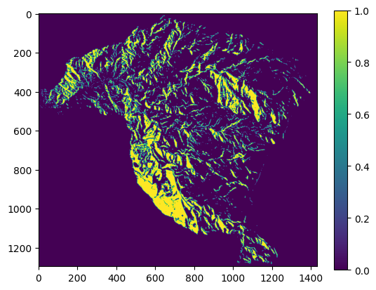
Entre los modelos paramétricos se destacan los Modelos Lineales Generalizados (GLM, por sus siglas en inglés). Los GLM comprenden una amplia clase de modelos en los que se asume que la variable de respuesta (\(y\)) sigue una distribución de la familia exponencial, como la gaussiana, de Poisson, binomial o gamma. El valor esperado de la respuesta (\(\mu\)) se modela mediante un predictor lineal (\(\eta\)) a través de una función de enlace (\(g(\mu) = \eta\)) que asume efectos (o pesos) aditivos de las covariables. Los GLM presentan numerosas ventajas frente a otros métodos estadísticos, ya que pueden incorporar tanto covariables continuas como discretas, y permiten una interpretación directa de los coeficientes del modelo.
A continuación se presentan los GLM de mayor utilidad para evaluar la susceptibilidad por movimientos en masa:
Regresión logística#
La regresión logística (RL) ha sido, durante mucho tiempo, un método GLM ampliamente utilizado para modelar la susceptibilidad a movimientos en masa. La RL estima la relación de una variable dependiente categórica (la ocurrencia de movimientos en masa) de valores binarios de 0 (no ocurrencia) y 1 (sí ocurrencia), con un grupo de variables independientes, en este caso las variables condicionantes del terreno. De esta forma, la RL se utiliza para clasificar a qué grupo, ocurrencia=1 ó no-ocurrencia=0, pertenece una observación en función de diferentes variables predictoras. Para esto la RL estima la probabilidad de y de pertenecer a cada grupo transformando la combinación lineal de las variables predictoras (x) mediante la función logit o sigmoid. Lo que le permite transformar los valores arrojados por la combinación lineal a un dominio entre 0 y 1. La función logit se define como el logaritmo natural de la relación entre la probabilidad de ocurrencia y la probabilidad de no ocurrencia, también denominada odds
\(P(y/x) = \frac{1}{1+e^{-z}}\)
\(\frac{p(y/x)}{1-p(y/x)} = e^{a+\sum bx}\)
\(Ln(\frac{p(y/x)}{1-p(y/x)}) = a+\sum bx\)
Donde \(P(y/x)\) es la probabilidad que y sea igual a 1 dado X, es decir la ocurrencia de movimientos en masa, dado la combinación lineal de las variables independientes:
\(z=\beta_o+\beta_1X_1+\beta_2X_2+\beta_3X_3+...+\beta_nX_n\)
Donde \(\beta_0\) es el intercepto del modelo, los valores \(\beta_i\) (i=1,2, 3, n) son los coeficientes de la regresión logística, es decir, los pesos de las variables, y los valores \(X_i\) (i=1, 2, 3,…, n) son las variables independientes. El resultado final es un valor entre 0 y 1, donde 0 es la probabilidad nula de ocurrencia de movimientos en masa y 1 la máxima probabilidad de ocurrencia. De acuerdo con esto, a pesar de que el modelo transformado es lineal en las variables, las probabilidades no son lineales.
La ventaja de la RL es que las variables predictoras no requieren tener distribución normal y pueden ser discretas o continuas, o una combinación de ambas. Sin embargo, para incorporar variables categóricas se deben transformar a variables binarias todas las clases, es decir una nueva variable por cada clase. El modelo en este caso elimina una clase, que pasa a ser la clase referente, y arroja un coeficiente para las demás clases. Es decir que los coeficientes de las clases se interpretan con respecto a la clase faltante. Esta eliminación de una clase se realiza con el objeto de evitar la multicolinealidad entre variables, ya que todas las clases sumadas dan como resultado un vector constante igual a 1, es decir que se correlacionan perfectamente.
Sin embargo, la regresión logística puede ser inconsistente al aplicarse en diferentes resoluciones espaciales y unidades de mapeo, debido a la naturaleza binaria de la variable de respuesta, la cual solo indica la presencia o ausencia de uno o más deslizamientos, sin diferenciar entre el número de eventos.

Figura 62 Función logística.#
A continuación se presenta un ejemplo de la estimación del coeficiente de la regresión logística para un problema de la ocurrencia o no de movimientos en masa dada dado una sola variable, la pendiente, clasificada en dos clases, pendientes \(<20°\) y pendientes \(>20°\).

Figura 63 Ejemplo 1 regresión logística.#
El coeficiente estimado es \(-0.46\), el cual se obtiene a partir del logaritmo natural de la relación entre los odds de la clase pendientes \(>20°\) con respecto a la ocurrencia de movimientos en masa y los odds de clase pendientes \(<20°\). Los odds para cada clase de pendiente corresponde a la probabilidad de ocurrencia de movimientos en masa en dicha clase sobre la probabilidad de no ocurrencia.
En el siguiente ejemplo se presentan los resultados tanto para el coeficiente de la pendiente como el intercepto, lo que permite construir la combinación lineal y estimar la probabilidad de ocurrencia de un movimiento en masa cuando la pendiente es \(>20°\) o cuando es \(<20°\). Para estimar esta probabilidad solo se debe reemplazar en la función sigmoid el valor de x por 1, cuando la pendiente es \(>20°\), o por el valor de 0 cuando la pendiente es \(<20°\).

Figura 64 Ejemplo 2 regresión logística.#
Como se puede observar, cuando se aplica la función e al coeficiente de la pendiente se obtiene los odds, es decir la probabilidad de ocurrencia de movimientos en masa dado que la pendiente sea \(>20°\) sobre la probabilidad de ocurrencia de movimientos en masa dado que la pendiente sea \(<20°\). En este caso que el valor obtenido es 0.63 significa que es más probable la ocurrencia para celdas con pendiente \(<20°\).
Python#
A continuación se implementará el método de RL para evaluar la susceptibilidad por movimientos en masa con los datos utilizados en el método anterior. En este ejemplo sólo se utilizarán tres variables (pendiente, aspecto y geologia).
Existen dos librerías que nos permiten resolver este modelo, statsmodels y sklearn. La primera de ellas nos ofrece un resumen con los resultados y métricas de desempeño del modelo y utilizar la librería Patsy que permite el uso de fórmulas.
import statsmodels.formula.api as sfm
lr = sfm.logit(formula = "inventario ~ pendiente + C(geologia)", data = df).fit()
print(lr.summary())
Warning: Maximum number of iterations has been exceeded.
Current function value: 0.012661
Iterations: 35
C:\Users\edier\miniconda3\Lib\site-packages\statsmodels\base\model.py:607: ConvergenceWarning: Maximum Likelihood optimization failed to converge. Check mle_retvals
warnings.warn("Maximum Likelihood optimization failed to "
Logit Regression Results
==============================================================================
Dep. Variable: inventario No. Observations: 910801
Model: Logit Df Residuals: 910790
Method: MLE Df Model: 10
Date: Sat, 12 Apr 2025 Pseudo R-squ.: 0.02902
Time: 12:24:32 Log-Likelihood: -11532.
converged: False LL-Null: -11876.
Covariance Type: nonrobust LLR p-value: 1.220e-141
=======================================================================================
coef std err z P>|z| [0.025 0.975]
---------------------------------------------------------------------------------------
Intercept -6.0824 0.042 -143.464 0.000 -6.166 -5.999
C(geologia)[T.4.0] -9.0436 157.946 -0.057 0.954 -318.611 300.524
C(geologia)[T.6.0] -12.8059 255.358 -0.050 0.960 -513.299 487.687
C(geologia)[T.8.0] 0.0814 0.109 0.746 0.456 -0.132 0.295
C(geologia)[T.9.0] -16.5929 552.025 -0.030 0.976 -1098.542 1065.356
C(geologia)[T.10.0] -0.3878 0.158 -2.454 0.014 -0.698 -0.078
C(geologia)[T.11.0] 0.2244 0.101 2.219 0.027 0.026 0.423
C(geologia)[T.14.0] -0.5945 0.055 -10.854 0.000 -0.702 -0.487
C(geologia)[T.15.0] 1.4500 0.283 5.129 0.000 0.896 2.004
C(geologia)[T.16.0] -13.3361 117.047 -0.114 0.909 -242.743 216.071
pendiente 0.4571 0.026 17.412 0.000 0.406 0.509
=======================================================================================
La librearía statsmodels incorpora por defecto el intercepto en el modelo y en las fórmulas pueden especificar el tipo de variables categóricas con una C. Utiliza por defecto solver = newton-cg. Como se mencionó anteriormente las clases de las variables categóricas son transformadas en variables binarias, eliminando una. En este caso se eliminó la clase 2 de geología, por lo que los coeficientes de las demas clases son con respecto a dicha clase. Entre los resultados se destacan el estimador para los coeficientes (máxima verosimilitud -MLE-), el logaritmo del estimador MLE (Log-likelihood), el coeficiente de ajuste (Pseudo R-squ.). Con respecto a los coeficientes se presenta el valor de la prueba de hipótesis nula que el valor del coeficiente sea igual a cero (z) como el valor del coeficiente y el error estándar (std err), y el p-value (P>|z|), este valor debe ser menor al 5% (0.05), lo cual significa que la probabilidad que el coeficiente tenga un valor de 0 es muy bajo. Finalmente se presenta el rango del 95% del dominio del valor del coeficiente, si el coeficiente es estadísticamente significativo, dicho rango no debe contener el valor 0.
La librería scikit learn permite parametrizar el modelo de diferentes formas, sin embargo requiere separar variables dependientes y variables independientes. Asi como transformar la variable categórica y eliminar una clase. También es importante tener en cuenta que la función LogisticRegression() por defecto utiliza como solver = lbfgs y L2 regularization, por lo que adiciona un término extra a la función log-loss. De esta forma, si se quiere obtener valores comparables a los del statsmodels se debe utilizar LogisticRegression(penalty=None).
dummy_geologia=pd.get_dummies(X['geologia'],prefix='geo')
column_name=X.columns.values.tolist()
column_name.remove('geologia')
X1=X[column_name].join(dummy_geologia)
X1.drop('geo_2.0',axis=1,inplace=True)
X1.head()
| pendiente | aspecto | geo_4.0 | geo_6.0 | geo_8.0 | geo_9.0 | geo_10.0 | geo_11.0 | geo_14.0 | geo_15.0 | geo_16.0 | |
|---|---|---|---|---|---|---|---|---|---|---|---|
| 0 | -1.582132 | -0.052203 | False | False | False | False | False | False | True | False | False |
| 1 | -1.460352 | -0.063030 | False | False | False | False | False | False | True | False | False |
| 2 | -1.442655 | -0.110407 | False | False | False | False | False | False | True | False | False |
| 3 | -1.383744 | -0.021339 | False | False | False | False | False | False | True | False | False |
| 4 | -1.301858 | 0.062487 | False | False | False | False | False | False | True | False | False |
Inicialmente, se importa la función para RL, y se construye el modelo con los hiperparámetros. En este caso, estamos asignándole un class_weight = balanced para que asigne mas peso a las celdas minoritarias, en este caso las celdas donde y=1. De esta forma RL nos ayuda a resolver el problema de la base de datos original desbalanceada. El segundo hiperparámetro que utilizamos es el tipo de algoritmo para resolver la RL, en este caso utilizaremos newton-cg. La librería «sklearn» utiliza por defecto el hiperparámetro fit_intercept con un valor de True que equivale a incluir el intercepto.
from sklearn.linear_model import LogisticRegression
model=LogisticRegression(class_weight='balanced', penalty = "none", max_iter=1000, solver='newton-cg')
model
LogisticRegression(class_weight='balanced', max_iter=1000, penalty='none',
solver='newton-cg')In a Jupyter environment, please rerun this cell to show the HTML representation or trust the notebook. On GitHub, the HTML representation is unable to render, please try loading this page with nbviewer.org.
LogisticRegression(class_weight='balanced', max_iter=1000, penalty='none',
solver='newton-cg')Luego de tener el modelo construido, se le asignan los datos con la función fit, en este caso, primero la matriz con las variables predictoras, y luego la variable y. De esta forma el modelo se entrena con los datos y se pueden obtener los resultados de los valores de los coeficientes con la función coef_
result=model.fit(X1,y)
print(result.coef_)
C:\Users\edier\miniconda3\Lib\site-packages\sklearn\linear_model\_logistic.py:1183: FutureWarning: `penalty='none'`has been deprecated in 1.2 and will be removed in 1.4. To keep the past behaviour, set `penalty=None`.
warnings.warn(
[[ 5.0895143e-01 -4.9221581e-03 -9.4745655e+00 -1.2263961e+01
4.5563515e-02 -1.4471029e+01 -3.7009606e-01 1.0903081e-01
-6.0363793e-01 1.3708341e+00 -1.4364478e+01]]
C:\Users\edier\miniconda3\Lib\site-packages\scipy\optimize\_linesearch.py:314: LineSearchWarning: The line search algorithm did not converge
warn('The line search algorithm did not converge', LineSearchWarning)
C:\Users\edier\miniconda3\Lib\site-packages\sklearn\utils\optimize.py:204: UserWarning: Line Search failed
warnings.warn("Line Search failed")
Con el modelo entrenado y guardado en la varible result podemos entonces obtener los valores que predice el modelo para toda la matriz con las variables predictoras. Para eso se utiliza la función predict. Esta función clasifica cada celda como inestable (1) o estable (0).
y_pred=result.predict(X1)
y_pred
array([0., 0., 0., ..., 0., 0., 0.])
Sin embargo, también se puede obtener los resultados del modelo antes de clasificarlo como (0,1). es decir la probabilidad de cada celda de ser 0 o de ser 1. Para eso se utiliza la función predict_proba. La cual puede ser mas útil para nuestro mapa.
y_prob=result.predict_proba(X1)
y_prob
array([[0.761943 , 0.238057 ],
[0.75050884, 0.24949116],
[0.74877465, 0.25122532],
...,
[0.5871985 , 0.4128015 ],
[0.6158412 , 0.3841588 ],
[0.6158377 , 0.3841623 ]], dtype=float32)
Como se puede observar el resultado en este caso, en lugar de ser un vector con la clasificación de cada celda, es un matriz de dos columnas. Donde la primera columna es la probabilidad de cada celda de ser 0, es decir estable, y la segunda columna la probabilidad de ser 1, es decir inestable. Para nuestro propósito es más útil obtener la probabilidad de cada celda de ser inestable. Para eso seleccionamos entonces solo la segunda columna de la matriz obtenida.
y_probs=result.predict_proba(X1)[:,1]
y_probs
array([0.238057 , 0.24949116, 0.25122532, ..., 0.4128015 , 0.3841588 ,
0.3841623 ], dtype=float32)
Ya tenemos los resultados y la predicción para todas las celdas. Sin embargo esto lo tenemos para un vector que construimos la principio que solo contiene las celdas dentro de la cuenca, es decir eliminó todas las celdas por fuera. Eso nos impide construir nuestra cuenca a partir de este vector.
Una forma de resolver esto se presenta a continuación. Existen muchas formas, seguramente otras mas directas.
Para este caso construiremos entonces un nuevo Dataframe, pero en este caso con el vector completo, sin eliminar las celdas por fuera de la cuenca, y las celdas por fuera de la cuenca, en lugar de tener un valor de NaN les daremos un valor de 0. Las funciones de sklearn no corren cuando encuentra dentro de los valores NaN.
De igual forma, hay que transformar las variables categóricas a variables tipo dummy y en este caso debemos eliminar una nueva columna que se forma con el intercepto y que denomina 0.0
pendiente_vector2=np.nan_to_num(pendiente_vector)
aspecto_vector2=np.nan_to_num(aspecto_vector)
geologia_vector2=np.nan_to_num(geologia_vector)
f={'pendiente':pendiente_vector2,'aspecto':aspecto_vector2,'geologia':geologia_vector2}
x_map=pd.DataFrame(f)
dummy_geologia=pd.get_dummies(x_map['geologia'],prefix='geo')
column_name=x_map.columns.values.tolist()
column_name.remove('geologia')
x_map=x_map[column_name].join(dummy_geologia)
x_map=x_map.drop('geo_2.0',axis=1)
x_map=x_map.drop('geo_0.0',axis=1)
Como se puede observar, tenemos ahora una matriz con todas las variables y con un número mayor de celdas.
Con esta matriz podemos entonces obtener para cada celda la probabilidad que se inestable.
y_pred=model.predict_proba(x_map)[:,1]
Ya lo único que nos queda es reconstruir a partir de dicho vector la matriz que conforma la cuenca con los valores de susceptibilidad. Para eso utilizaremos como máscara el mapa de pendiente.
raster = rio.open('https://raw.githubusercontent.com/edieraristizabal/CartografiaGeotecnica/master/libro/data/miel/Pendiente.tif')
pendiente=raster.read(1)
IS=y_pred.reshape(pendiente.shape)
IS=np.where(pendiente<0,np.nan,IS)
fig,ax=plt.subplots(figsize=(7,6))
im=ax.imshow(IS,cmap="RdYlGn_r")
plt.colorbar(im,ax=ax,label="Probabilidad de deslizamiento")
ax.set_title("Susceptibilidad — Regresión Logística\nCuenca La Miel",fontsize=13)
ax.set_xlabel("Columna"); ax.set_ylabel("Fila")
plt.tight_layout()
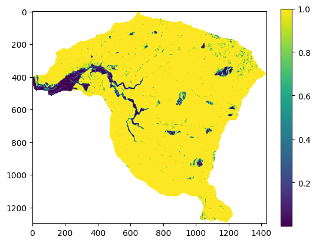
Modelo de Poisson#
La regresión de Poisson es otro miembro de la familia GLM que permite modelar datos de conteo, lo cual posibilita la agregación del número de deslizamientos y sus probabilidades dentro de cualquier TMU. La distribución de Poisson se utiliza debido a su adecuación para modelar datos de conteo no negativos (\(𝑌_𝑖\)=0,1,2,…) y su relación con procesos que cuentan la ocurrencia de eventos en el espacio. La distribución de Poisson describe la probabilidad de que un número de eventos \(𝑌_𝑖\) ocurra en un intervalo de tiempo o una región espacial dada, si esos eventos suceden con una tasa constante \(𝜆_𝑖\):
donde: \(𝜆_𝑖\): tasa o intensidad esperada del número de eventos en la región, \(𝑖\), \(𝑦_𝑖\): número observado de eventos en la región \(𝑖\).
Los Modelos Lineales Generalizados (GLM) son modelos en los que las variables de respuesta siguen una distribución distinta a la distribución normal. El modelo lineal generalizado de Poisson se especifica de la siguiente manera:
donde:
y \(𝜂_𝑖\) es la parte lineal del modelo que depende de las covariables \(𝑥_{𝑖j}\) y de los parámetros \(𝛽_𝑗\) (para \(𝑗=0,1,…,𝑝\). En los modelos de Regresión de Poisson, las variables predictoras o explicativas pueden ser una mezcla de valores numéricos o categóricos.
En el modelo de Poisson, la función de enlace que relaciona la media \(𝜆_𝑖\) con la parte lineal \(𝜂_𝑖\) es el logaritmo natural. Es decir, la función de enlace es:
De esta forma, la media de la distribución de Poisson se relaciona exponencialmente con la combinación lineal de las covariables:
Esta forma asegura que la intensidad \(𝜆_𝑖\) siempre será positiva, como es necesario en una distribución de Poisson.
Los coeficientes se calculan utilizando métodos como la Estimación de Máxima Verosimilitud (MLE) o la cuasi-verosimilitud máxima.
La distribución de Poisson puede ser considerada como el límite de una distribución binomial. La distribución binomial modela el número de éxitos en un número fijo de ensayos independientes. Si el número de ensayos es muy grande, pero la probabilidad de éxito en cada ensayo es muy baja (es decir, si los eventos son raros), la distribución de Poisson resulta ser una muy buena aproximación para modelar el número total de éxitos. Mientras que la distribución de Poisson se usa, entonces, para modelar situaciones en las que estamos contando eventos raros que ocurren a lo largo de un intervalo (de tiempo, espacio, etc.). Por ejemplo, la cantidad de accidentes de tráfico en un cruce por día, o el número de llamadas que llegan a un centro de emergencias por minuto.
En el contexto de un modelo de Poisson, como los Modelos Lineales Generalizados de Poisson (GLM de Poisson) para análisis espacial, los términos sobredispersión y subdispersión se refieren a la relación entre la varianza y la media de los datos observados, y cómo esta relación se ajusta a las expectativas de la distribución de Poisson. Estos conceptos son cruciales porque la distribución de Poisson tiene una característica específica: la media y la varianza son iguales. Sin embargo, en la práctica, los datos espaciales frecuentemente presentan patrones que difieren de esta suposición, lo que da lugar a la sobredispersión o la subdispersión.
En un modelo de Poisson, la media y la varianza están directamente relacionadas de la siguiente manera:
Si \(𝑌_𝑖\) sigue una distribución de Poisson con media \(𝜆_𝑖\):
Es decir, la varianza y la media son iguales. Esta propiedad, sin embargo, no siempre se cumple cuando se modelan datos reales, especialmente en datos espaciales.
La sobredispersión ocurre cuando la varianza de los datos es mayor que la media. Es decir, los datos muestran más variabilidad de la que el modelo de Poisson predice. La sobredispersión indica que el modelo subestima la variabilidad en los datos. Puede ser causada por factores no observados que afectan el proceso, creando clústeres o patrones espaciales. Por ejemplo, si se modela el número de deslizamientos en una región, pero existen factores locales que varían significativamente dentro de la región (como el tipo de suelo o las prácticas de manejo del terreno), la variabilidad observada en los deslizamientos será mayor que la predicha por la simple distribución de Poisson. Los modelos de Poisson no pueden manejar adecuadamente este tipo de situación porque asumen una relación 1:1 entre la media y la varianza. Cuando hay sobredispersión, el modelo suele producir errores estándar subestimados, lo que puede llevar a test estadísticos incorrectos y a la identificación de relaciones significativas falsas. Una opción común para manejar la sobredispersión es utilizar un modelo de binomial negativo. Este modelo introduce un parámetro adicional que permite ajustar la varianza de manera independiente de la media.
La subdispersión ocurre cuando la varianza de los datos es menor que la media. En este caso, los datos presentan menos variabilidad de la que la distribución de Poisson predice. La subdispersión es menos común que la sobredispersión en la práctica, pero puede ocurrir en ciertos contextos donde los eventos están altamente regulados o tienen un patrón regular. Un ejemplo podría ser el número de árboles plantados siguiendo un esquema regular en una región o una situación en la que la influencia espacial está restringida, causando que los eventos ocurran de manera muy controlada y menos variable. Manejar la subdispersión es menos común, pero se puede utilizar una reformulación del modelo que considere una menor variabilidad. Esto implica ajustar la especificación del modelo, por ejemplo, restringiendo el rango de valores posibles para las observaciones. También se podrían utilizar modelos como la regresión cuasi-Poisson, donde se ajusta la varianza independientemente de la media para modelar la subdispersión.
El proceso de puntos de Poisson a veces se llama proceso puramente o completamente aleatorio. Este proceso tiene la propiedad de que el número de eventos \(N(A)\) en una región acotada \(A \in \mathbb{R}^d\) está distribuido de manera independiente y uniforme sobre \(A\). Esto significa que la ubicación de un punto no afecta las probabilidades de que otros puntos aparezcan cerca y que no hay regiones donde los eventos sean más propensos a aparecer.
Si un proceso de puntos de Poisson tiene un parámetro constante, digamos, \(\lambda\), entonces se llama proceso de Poisson homogéneo (o estacionario) (HPP). El parámetro \(\lambda\), llamado intensidad, está relacionado con el número esperado (o promedio) de puntos de Poisson que existen en alguna región acotada. El parámetro \(\lambda\) se puede interpretar como el número promedio de puntos por alguna unidad de longitud, área o volumen, dependiendo del espacio matemático subyacente, por lo que a veces se llama densidad media.
El HPP es estacionario y los patrones y procesos de puntos espaciales son isotrópicos. Es estacionario porque la intensidad es constante y, además, es isotrópico porque la intensidad es invariante a la rotación de \(\mathbb{R}^d\).
Una generalización del HPP que permite una intensidad no constante \(\lambda\) se llama proceso de Poisson no-homogéneo (IPP). Tanto el HPP como el IPP asumen que los eventos ocurren de manera independiente y están distribuidos según una intensidad dada, \(\lambda\). La principal diferencia es que el HPP asume que la función de intensidad es constante (\(\lambda = \text{const.}\)), mientras que la intensidad de un IPP varía espacialmente (\(\lambda = Z(u)\)).
En el plano \((\mathbb{R}^2)\), el proceso de puntos de Poisson se conoce como proceso de Poisson espacial. En una región acotada \(A\) en un plano \((\mathbb{R}^2)\), con \(N(A)\) siendo el número (aleatorio) de puntos \(N\) que existen en la región \(A \subset \mathbb{R}^2\), un proceso de Poisson homogéneo con parámetro \(\lambda > 0\) describe la probabilidad de que existan \(n\) puntos en \(A\) mediante:
\( P\{N(A) = n\} = \frac{\lambda^{|A|} (|A|)^n}{n!} e^{-\lambda |A|} \)
donde \(|A|\) denota el área de \(A\).
Ejemplo#
Supongamos que estamos analizando la cantidad de movimientos en masa en diferentes regiones de un área en una región montañosa. Queremos modelar cómo ciertos factores geoambientales afectan el número de puntos calientes en cada celda. Los factores considerados son la altura media de la región, la pendiente media y la densidad de vegetación (medida con el índice NDVI). Utilizaremos un modelo de Poisson para modelar el número de movimientos en masa en función de estas covariables.
# Crear un conjunto de datos simulado
np.random.seed(42)
data = {
'elevacion': np.random.normal(500, 3500, 100),
'pendiente': np.random.uniform(5, 60, 100),
'ndvi': np.random.uniform(0.2, 0.9, 100),
'area_km2': np.random.uniform(1, 10, 100), # área de cada punto (entre 1 y 10 km²)
'deslizamientos': np.random.poisson(5, 100) # Conteo observado
}
df = pd.DataFrame(data)
# Calcular el logaritmo del área para usar como offset
df["log_area"] = np.log(df["area_km2"])
# Describir los primeros datos del DataFrame
print(df.head())
# Ajustar el modelo GLM de Poisson con offset
modelo_poisson_offset = smf.glm(
formula="deslizamientos ~ elevacion + pendiente + ndvi",
data=df,
family=sm.families.Poisson(),
offset=df["log_area"] # aquí se incorpora el log(área)
).fit()
# Resumen del modelo
print(modelo_poisson_offset.summary())
El coeficiente para «elevacion» indica el cambio en la tasa esperada de deslizamientos por unidad adicional de elevación.
El coeficiente para «pendiente» indica cómo afecta la pendiente a la tasa de ocurrencia de deslizamientos. Si el coeficiente es negativo, una mayor pendiente podría reducir la probabilidad de que ocurran deslizamientos.
El coeficiente para «ndvi» describe el impacto de la densidad de vegetación sobre el número de deslizamientos.
# Predecir los valores esperados (número de deslizamientos)
df["mu_pred"] = modelo_poisson_offset.predict()
# Mostrar los primeros resultados
print(df[["deslizamientos", "mu_pred"]].head())
Modelos Semiparamétricos#
Modelos Aditivos Generalizados (GAM)#
Los Modelos Aditivos Generalizados (Generalized Additive Models, GAM) son una extensión flexible de los Modelos Lineales Generalizados (GLM) que permiten modelar relaciones no lineales entre las variables independientes y la variable dependiente mediante funciones suaves. A diferencia de los GLM tradicionales, donde cada predictor contribuye linealmente a la respuesta a través de un coeficiente constante, los GAM permiten que cada predictor tenga un efecto no paramétrico a través de funciones suaves estimadas a partir de los datos.
Un modelo aditivo generalizado se define como:
\( g(\mathbb{E}[Y]) = \beta_0 + f_1(X_1) + f_2(X_2) + \cdots + f_p(X_p) \)
Donde:
\(( Y )\) es la variable de respuesta.
\(( g(\cdot) )\) es la función de enlace, como en los GLM.
\(( \beta_0 )\) es el intercepto.
\(( f_j(X_j) )\) son funciones suaves no paramétricas (usualmente splines) que modelan el efecto del predictor \(( X_j )\) sobre la respuesta.
\(( p )\) es el número de predictores.
Estas funciones suaves se estiman utilizando técnicas como splines cúbicos o splines penalizados, y se ajustan de manera iterativa para maximizar la verosimilitud penalizada del modelo.
En un modelo GLM tradicional:
\( g(\mathbb{E}[Y]) = \beta_0 + \beta_1 X_1 + \cdots + \beta_p X_p \)
Cada predictor tiene un efecto lineal sobre la respuesta. En cambio, en un GAM, el efecto puede ser no lineal y específico para cada variable, pero conservando una estructura aditiva.
Las ventajas que ofrecen los GAM son:
Permiten modelar relaciones complejas sin asumir formas funcionales rígidas.
Son interpretables: cada efecto \(( f_j(X_j) )\) puede visualizarse gráficamente.
Conservan muchas de las propiedades de los GLM, incluyendo la elección de la función de enlace y distribución de la respuesta.
Los GAM son particularmente útiles en estudios de susceptibilidad a movimientos en masa, donde la relación entre la probabilidad de ocurrencia y variables como pendiente, litología o curvatura del terreno puede ser altamente no lineal.
Ejemplo#
from pygam import LogisticGAM, s, f
# Supongamos que tenemos una base con las variables:
# 'pendiente', 'geologia', y 'inventario' (0 = no ocurrió, 1 = ocurrió)
# Convertimos la variable geológica a categórica (si es necesario)
df['geologia'] = df['geologia'].astype('category').cat.codes
# Definir el modelo GAM con una función suave para pendiente y un factor para geología
gam = LogisticGAM(s(0) + f(1)).fit(df[['pendiente', 'geologia']], df['inventario'])
# Evaluar el modelo
print("AIC:", gam.statistics_['AIC'])
print("Pseudo R2:", gam.statistics_['pseudo_r2'])
AIC: 23024.58924534286
Pseudo R2: OrderedDict([('explained_deviance', 0.03226871783801588), ('McFadden', 0.9677312821619847), ('McFadden_adj', 0.03064431379500354)])
# Visualización del efecto de la pendiente
plt.figure()
plt.title("Efecto no lineal de la pendiente")
XX = gam.generate_X_grid(term=0)
plt.plot(XX[:, 0], gam.partial_dependence(term=0, X=XX))
plt.xlabel("Pendiente")
plt.ylabel("f(Pendiente)")
plt.grid(True)
plt.show()
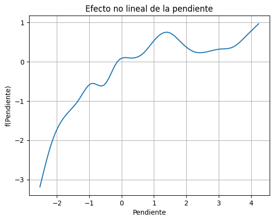
Modelos No-Paramétricos#
Support Vector Machine (SVM)#
SVM es un modelo que representa a los puntos de muestra en el espacio, separando las clases a 2 espacios lo más amplios posibles mediante un hiperplano de separación definido como el vector entre los 2 puntos, de las 2 clases, más cercanos al que se llama vector soporte. Cuando las nuevas muestras se ponen en correspondencia con dicho modelo, en función de los espacios a los que pertenezcan, pueden ser clasificadas a una o la otra clase.
Los vectores de soporte son los puntos que definen el margen máximo de separación del hiperplano que separa las clases. Se llaman vectores, en lugar de puntos, porque estos «puntos» tienen tantos elementos como dimensiones tenga nuestro espacio de entrada. Es decir, estos puntos multi-dimensionales se representan con un vector de n dimensiones.

Figura 65 Interpretación geométrica de SVM.#
El Maximal Margin Classifier tiene poca aplicación práctica, ya que rara vez se encuentran casos en los que las clases sean perfecta y linealmente separables. De hecho, incluso cumpliéndose estas condiciones ideales, en las que exista un hiperplano capaz de separar perfectamente las observaciones en dos clases, esta aproximación sigue presentando dos inconvenientes:
Dado que el hiperplano tiene que separar perfectamente las observaciones, es muy sensible a variaciones en los datos. Incluir una nueva observación puede suponer cambios muy grandes en el hiperplano de separación (poca robustez).
Que el maximal margin hyperplane se ajuste perfectamente a las observaciones de entrenamiento para separarlas todas correctamente suele conllevar problemas de overfitting.
Por estas razones, es preferible crear un clasificador basado en un hiperplano que, aunque no separe perfectamente las dos clases, sea más robusto y tenga mayor capacidad predictiva al aplicarlo a nuevas observaciones (menos problemas de overfitting). Esto es exactamente lo que consiguen los clasificadores de vector soporte, también conocidos como soft margin classifiers o Support Vector Classifiers. Para lograrlo, en lugar de buscar el margen de clasificación más ancho posible que consigue que las observaciones estén en el lado correcto del margen; se permite que ciertas observaciones estén en el lado incorrecto del margen o incluso del hiperplano (Tomado de cienciadedatos.net).
La naturaleza del hiperplano y el comportamiento del modelo se controlan principalmente con tres hiperparámetros. El primero es el kernel, que define la forma de la función de decisión; puede ser “linear” para fronteras simples y rectas, o “rbf” (Función de Base Radial), una opción más flexible y comúnmente usada que permite crear fronteras de separación muy complejas y no lineales. El segundo es C, el parámetro de regularización. Este hiperparámetro gestiona el balance entre clasificar correctamente los datos de entrenamiento y mantener un margen de separación simple y amplio. Un valor de C bajo permite un margen más amplio y suave a costa de clasificar erróneamente algunos puntos (más generalización), mientras que un C alto intenta clasificar cada punto correctamente, lo que puede resultar en un modelo más complejo y sobreajustado. Finalmente, para el kernel “rbf”, el hiperparámetro gamma define la influencia de un único punto de entrenamiento; valores bajos de gamma significan una influencia amplia (frontera más suave), y valores altos significan una influencia cercana y localizada (frontera más ajustada a los datos de entrenamiento).
Python#
Similar a los casos anteriores, se importa la librería de SVC, y se instancia. En este caso se utlizará un kernel lineal y un valor de regularización de 1xE10. Existen otra serie de hiperparámetros para instanciar el modelo que se pueden consultar en la guía del usuario.
from sklearn.svm import SVC
model = SVC(kernel='linear', C=1E10)
Si se utiliza toda la base de datos, los resultados obtenidos clasifican todas las celdas con valores muy bajos. Esto se debe a que se utilizó para el entrenamiento la matriz desbalanceada, es decir con las celdas del sí (1) y con todas las celdas del no (0). Lo que genera que el modelo no aprenda adecuadamente a predecir los sí, ya que aprende esencialmente el no.
Como este método no tiene un hiperparámetro para manejar esta situación, como RL, entonces debemos remuestrear nuestros datos de entrenamiento de tal forma que se reduzca el desbalance. En este caso utilizaremos el 1% de los no.
Más allá de este ejemplo pedagógico, la práctica más extendida en estudios colombianos de susceptibilidad (como los desarrollados para el departamento de Antioquia) es utilizar una razón de muestreo balanceada 1:1, seleccionando para el entrenamiento la misma cantidad de celdas estables que de celdas con movimientos en masa, reservando típicamente el 80% del inventario histórico para el entrenamiento del modelo y el 20% restante para su validación. Esta precaución es crítica: si el modelo se entrena sobre un dataset altamente desbalanceado y sin corregir (por ejemplo, una relación real de 1:100 entre celdas con y sin movimientos en masa), la métrica de eficiencia (accuracy) se vuelve matemáticamente engañosa, pues queda dominada por la clase mayoritaria (las laderas estables), lo que se traduce en una sensibilidad muy pobre del modelo para detectar los casos raros de interés, es decir, las celdas inestables.
df1=df[(df["inventario"]==1) | (df["inventario"]==0).sample(frac=0.01)]
X_01=df1.drop("inventario", axis=1)
y_01=df1['inventario']
df1['inventario'].value_counts()
0.0 9090
1.0 1620
Name: inventario, dtype: int64
El proceso a continuación toma un tiempo considerable, de acuerdo con la capacidad computacional o el ambiente de trabajo que esté utilizando (cuantas celdas tiene su base de datos?…entonces paciencia…o remuestree sus datos).
model.fit(X_01,y_01)
IS_01 = model.predict(x_map)
IS_01=IS_01.reshape(pendiente.shape)
IS_01=np.where(pendiente<0,np.nan,IS_01)
fig,ax=plt.subplots(figsize=(7,6))
im=ax.imshow(IS_01,cmap="RdYlGn_r",vmin=0,vmax=1)
plt.colorbar(im,ax=ax,label="P(deslizamiento)")
ax.set_title("Susceptibilidad — Regresión Logística (balanceada)\nCuenca La Miel",fontsize=13)
ax.set_xlabel("Columna"); ax.set_ylabel("Fila")
plt.tight_layout()
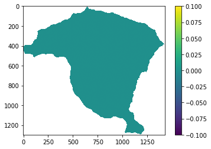
Como se puede observar, el modelo ya tiene capacidad para predecir los si (1).
Random forest#
Un Random Forest es un conjunto (ensemble) de árboles de decisión combinados con bagging. Los árboles de decisión tienen la tendencia de sobre-ajustar (overfit). Esto quiere decir que tienden a aprender muy bien los datos de entrenamiento pero su generalización no es tan buena. Una forma de mejorar la generalización de los árboles de decisión es usar regularización. Para mejorar mucho más la capacidad de generalización de los árboles de decisión, deberemos combinar varios árboles. Al usar bagging, lo que en realidad está pasando, es que distintos árboles ven distintas porciones de los datos. Ningún árbol ve todos los datos de entrenamiento. Esto hace que cada árbol se entrene con distintas muestras de datos para un mismo problema. De esta forma, al combinar sus resultados, unos errores se compensan con otros y tenemos una predicción que generaliza mejor (Tomado de iartificial.net).
Random Forest es un modelo donde su rendimiento y complejidad se ajustan con varios hiperparámetros clave. El más intuitivo es n_estimators, que simplemente define el número de árboles que se construirán en el bosque; un número mayor generalmente conduce a un modelo más estable y preciso, aunque con un mayor costo computacional. Otro hiperparámetro crucial es max_features, que determina el número máximo de variables predictoras a considerar al momento de decidir cada división en un árbol. Limitar este número fuerza a los árboles a ser diferentes entre sí, lo que reduce la correlación entre ellos y mejora la capacidad predictiva del ensamble. Finalmente, max_depth controla la profundidad máxima de cada árbol individual. Árboles más profundos pueden capturar relaciones muy complejas en los datos, pero también son más propensos a sobreajustarse a los datos de entrenamiento. Limitar la profundidad ayuda a crear modelos más simples y generalizables.

Figura 66 Interpretación geométrica de random forest.#
Python#
De forma similar se importa la librería, y se instancia con los hiperparámetros deseados. Igualmente se trabajará solo con el 1% de las celdas del sí (1)
from sklearn.ensemble import RandomForestRegressor
rf = RandomForestRegressor(n_estimators= 1000)
rf.fit(X_01, y_01);
IS_01=rf.predict(x_map)
IS_01=IS_01.reshape(pendiente.shape)
IS_01=np.where(pendiente<0,np.nan,IS_01)
fig,ax=plt.subplots(figsize=(7,6))
im=ax.imshow(IS_01,cmap="RdYlGn_r",vmin=0,vmax=1)
plt.colorbar(im,ax=ax,label="P(deslizamiento)")
ax.set_title("Susceptibilidad — Random Forest\nCuenca La Miel",fontsize=13)
ax.set_xlabel("Columna"); ax.set_ylabel("Fila")
plt.tight_layout()
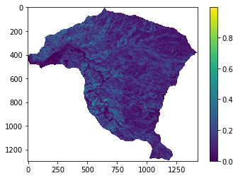
El modelo de random forest permite obtener la importancia de las variables. A continuación se presenta el código para eso:
print(list(rf.feature_importances_))
[0.47517109325806123, 0.48043670293880586, 0.04439220380313297]
Redes neuronales#
Una red neuronal artificial es un grupo interconectado de nodos similar a la vasta red de neuronas en un cerebro biológico. Cada nodo circular representa una neurona artificial y cada flecha representa una conexión desde la salida de una neurona a la entrada de otra.

Figura 67 Interpretación geométrica de redes neuronales. Tomado de Wikipedia#
Cada neurona está conectada con otras a través de unos enlaces. En estos enlaces el valor de salida de la neurona anterior es multiplicado por un valor de peso. Estos pesos en los enlaces pueden incrementar o inhibir el estado de activación de las neuronas adyacentes. Del mismo modo, a la salida de la neurona, puede existir una función limitadora o umbral, que modifica el valor resultado o impone un límite que no se debe sobrepasar antes de propagarse a otra neurona. Esta función se conoce como función de activación. Estos sistemas aprenden y se forman a sí mismos, en lugar de ser programados de forma explícita. Para realizar este aprendizaje automático, normalmente, se intenta minimizar una función de pérdida que evalúa la red en su total. Los valores de los pesos de las neuronas se van actualizando buscando reducir el valor de la función de pérdida. Este proceso se realiza mediante la propagación hacia atrás.
Su gran flexibilidad proviene de la capacidad de ajustar su arquitectura y su proceso de aprendizaje mediante hiperparámetros. Los más importantes definen la arquitectura de la red: el número de capas ocultas (hidden_layer_sizes) y el número de neuronas en cada una de ellas. Más capas y neuronas permiten al modelo aprender patrones extremadamente complejos, pero aumentan el riesgo de sobreajuste y el costo computacional. La función de activación (activation), como “ReLU” o “sigmoid”, es otro hiperparámetro crucial, ya que determina la salida de cada neurona y permite al modelo capturar relaciones no lineales. Finalmente, el proceso de entrenamiento se controla con el optimizador (solver u optimizer), como “adam”, que es el algoritmo que ajusta los pesos de la red para minimizar el error, y la tasa de aprendizaje (learning_rate), que controla la magnitud de dichos ajustes en cada paso. Una tasa de aprendizaje adecuada es vital para asegurar que el modelo converja a una buena solución de manera eficiente.
Python#
La librería sklearn permite implementar el Multi-layer Perceptron classifier (MLP). Para redes neuronales más complejas se deben utilizar otras librerías como TensorFlow. Sin embargo MLP permite un importante número de hiperparámetros, tales como el número de capas escondidas y el número de neuronas en cada una, así como el número de iteraciones que deseamos realice la RNA.
from sklearn.neural_network import MLPClassifier
mlp = MLPClassifier(hidden_layer_sizes=(5,2),max_iter=500) # dos capas escondidas, la primera con 5 neuronas y la segunda con dos neuronas
mlp
MLPClassifier(hidden_layer_sizes=(5, 2), max_iter=500)
Para RNA es importante escalar las variables, para esto utilizamos la función StandardScaler:
from sklearn.preprocessing import StandardScaler
scaler = StandardScaler()
scaler.fit(X_01)
X_trans = scaler.transform(X_01)
Finalmente, se entrena el modelo y se predice.
mlp.fit(X_01,y_01)
MLPClassifier(hidden_layer_sizes=(5, 2), max_iter=500)
IS=mlp.predict(x_map)
IS_01=IS_01.reshape(pendiente.shape)
IS_01=np.where(pendiente<0,np.nan,IS_01)
fig,ax=plt.subplots(figsize=(7,6))
im=ax.imshow(IS_01,cmap="RdYlGn_r",vmin=0,vmax=1)
plt.colorbar(im,ax=ax,label="P(deslizamiento)")
ax.set_title("Susceptibilidad — Red Neuronal (MLP)\nCuenca La Miel",fontsize=13)
ax.set_xlabel("Columna"); ax.set_ylabel("Fila")
plt.tight_layout()
Comparativa de Métodos: Guía de Interpretación#
La siguiente tabla resume las características clave de cada método implementado en este capítulo. Esta comparativa ayuda a seleccionar el método más apropiado según los datos disponibles, el objetivo del análisis y el contexto de aplicación.
Estudios colombianos que han aplicado varios de estos métodos sobre el mismo conjunto de datos permiten dimensionar sus diferencias reales de desempeño. En el Valle de Aburrá, Aristizábal et al. [2019] compararon un modelo bivariado (WoE) con uno multivariado (Regresión Logística) sobre el mismo inventario, obteniendo un AUC de 76,8% para el WoE frente a 77,8% para la Regresión Logística, una diferencia modesta que respalda el uso del WoE cuando se prioriza la interpretabilidad física de las variables. En un estudio posterior a escala 1:10.000 en el municipio de Andes (Antioquia), Aristizábal et al. [2022] aplicaron el método WoE dividiendo el municipio en dos sectores por su variabilidad geomorfológica: el sector occidental obtuvo un AUC de ajuste (tasa de éxito) de 60,6% y un AUC de predicción de 59,2%, mientras que el sector oriental alcanzó valores considerablemente más altos, de 71,9% y 71,7% respectivamente, evidenciando cómo la heterogeneidad geológica y geomorfológica local puede afectar sustancialmente el desempeño de un mismo método estadístico dentro de un mismo municipio.
Método |
Tipo |
Interpretable |
Requiere |
Ventajas |
Limitaciones |
|---|---|---|---|---|---|
Frequency Ratio (FR) |
Bivariado |
✓ |
Variables categóricas |
Simple, transparente, fácil de validar |
No considera interacción entre variables |
Statistical Index (SI) |
Bivariado |
✓ |
Variables categóricas |
Robusto a clases sin movimientos |
Sensible al número de clases |
Weight of Evidence (WoE) |
Bivariado |
✓ |
Independencia condicional |
Base probabilística sólida |
Supone variables independientes |
LDA |
Multivariado paramétrico |
✓ |
Normalidad, covarianzas iguales |
Coeficientes interpretables |
Supuestos estadísticos fuertes |
Regresión Logística (LR) |
Multivariado paramétrico |
✓ |
Variables numéricas |
Probabilidades calibradas, coeficientes interpretables |
Linealidad en log-odds |
Random Forest (RF) |
No paramétrico |
Parcial |
Variables numéricas |
Alta precisión, captura no-linealidades |
Caja negra, costoso computacionalmente |
Red Neuronal (MLP) |
No paramétrico |
✗ |
Datos abundantes, escalar |
Máxima flexibilidad |
Difícil interpretación, sobreajuste |
Criterios de selección#
¿Necesitas interpretación física de los coeficientes? → FR, SI, WoE, LR
¿Tienes variables mixtas (categóricas + numéricas)? → FR, WoE
¿El objetivo es máxima precisión predictiva? → RF, MLP
¿Datos escasos (< 500 movimientos)? → FR, WoE, LR
¿Requieres validación ante tomadores de decisión? → FR, LR (más aceptables)
# ── Comparativa cuantitativa de métodos ──────────────────────────────────────
# Ejecuta este bloque DESPUÉS de haber calibrado todos los modelos del capítulo
# para obtener una tabla resumen con métricas de evaluación.
import pandas as pd
import numpy as np
import matplotlib.pyplot as plt
from sklearn.metrics import roc_auc_score
# Diccionario con {nombre_método: probabilidades_predichas}
# Reemplaza estos valores con los resultados de tu ejecución
# (cada variable debe ser un array con P(deslizamiento) para el set de validación)
modelos = {
'Frequency Ratio': 'IS_FR_val', # reemplazar con variable real
'Weight of Evidence': 'IS_WoE_val',
'Regresión Logística': 'y_pred_LR',
'Random Forest': 'y_pred_RF',
}
# ── Función de evaluación rápida ──────────────────────────────────────────────
def evaluar_modelo(y_true, y_prob, nombre):
"""
Calcula AUC, precisión (umbral 0.5) y recall para un modelo dado.
Parámetros
----------
y_true : array-like — etiquetas reales (0/1)
y_prob : array-like — probabilidades predichas
nombre : str — nombre del modelo
Retorna
-------
dict con métricas
"""
from sklearn.metrics import precision_score, recall_score, f1_score
y_pred = (np.array(y_prob) >= 0.5).astype(int)
return {
'Método': nombre,
'AUC': roc_auc_score(y_true, y_prob),
'Precisión': precision_score(y_true, y_pred, zero_division=0),
'Recall': recall_score(y_true, y_pred, zero_division=0),
'F1': f1_score(y_true, y_pred, zero_division=0),
}
# ── Ejemplo con datos simulados (reemplazar con datos reales) ────────────────
np.random.seed(42)
n = 500
y_true = np.random.binomial(1, 0.2, n)
resultados_sim = [
evaluar_modelo(y_true, np.clip(y_true + np.random.normal(0, 0.35, n), 0, 1),
'Frequency Ratio'),
evaluar_modelo(y_true, np.clip(y_true + np.random.normal(0, 0.30, n), 0, 1),
'Weight of Evidence'),
evaluar_modelo(y_true, np.clip(y_true + np.random.normal(0, 0.25, n), 0, 1),
'Regresión Logística'),
evaluar_modelo(y_true, np.clip(y_true + np.random.normal(0, 0.20, n), 0, 1),
'Random Forest'),
]
df_comp = pd.DataFrame(resultados_sim).set_index('Método')
print('=== Comparativa de Modelos (datos simulados — reemplazar con reales) ===')
print(df_comp.round(3).to_string())
# ── Gráfico de barras comparativo ─────────────────────────────────────────────
fig, ax = plt.subplots(figsize=(10, 5))
x = np.arange(len(df_comp))
w = 0.2
for j, (col, color) in enumerate(zip(['AUC','Precisión','Recall','F1'],
['royalblue','tomato','seagreen','orange'])):
ax.bar(x + j*w, df_comp[col], w, label=col, color=color, edgecolor='k', alpha=0.85)
ax.set_xticks(x + 1.5*w)
ax.set_xticklabels(df_comp.index, fontsize=10)
ax.set_ylabel('Métrica', fontsize=12)
ax.set_ylim(0, 1)
ax.set_title('Comparativa de Métodos de Susceptibilidad — Cuenca La Miel\n'
'(Nota: reemplazar valores simulados con resultados reales)', fontsize=12)
ax.legend(fontsize=10)
ax.grid(axis='y', alpha=0.3)
plt.tight_layout()
plt.show()
Actividades#
Nuevo método bivariado — Certainty Factor (CF): Implementa el Certainty Factor definido como: $\(CF = \begin{cases} (P_{s|x} - P_s) / P_{s|x}(1-P_s) & \text{si } P_{s|x} \geq P_s \\(P_{s|x} - P_s) / P_s(1-P_{s|x}) & \text{si } P_{s|x} < P_s \end{cases}\)$ Aplícalo a la variable pendiente y compara el mapa resultante con el Frequency Ratio.
Optimización de hiperparámetros: Para el modelo Random Forest, usa
GridSearchCVconcv=5para optimizarn_estimatorsymax_depth. ¿Mejora el AUC respecto al modelo con parámetros por defecto?Tabla comparativa de métodos: Completa la siguiente tabla para los 4 métodos que implementaste. Para cada uno calcula AUC, Precisión, Recall y tiempo de cómputo:
Método |
AUC |
Precisión |
Recall |
Tiempo (s) |
Interpretable |
|---|---|---|---|---|---|
Frequency Ratio |
Sí |
||||
Weight of Evidence |
Sí |
||||
Regresión Logística |
Sí |
||||
Random Forest |
Parcial |
Selección de variables: Usa
RandomForestClassifier.feature_importances_para identificar las 3 variables más importantes. ¿Coincide con tu intuición geomorfológica? Entrena de nuevo el modelo solo con esas 3 variables y compara el AUC.
Referencias#
Edier Aristizábal, F. García, R. J. Marín, F. Gómez, and J. Guzmán. Rainfall-intensity effect on landslide hazard assessment due to climate change in north-western colombian andes. Revista Facultad de Ingeniería Universidad de Antioquia, pages 1–16, 2022. URL: https://www.doi.org/10.17533/udea.redin.20201215, doi:10.17533/udea.redin.20201215.
Edier Aristizábal, López S., Sánchez O., Vásquez M., Rincón F., Ruiz-Vásquez D., Restrepo S., and Valencia J.S. Evaluación de la amenaza por movimientos en masa detonados por lluvias para una región de los andes colombianos estimando la probabilidad espacial, temporal, y magnitud. Boletín de Geología, pages 85–105, 2019. URL: http://eusoils.jrc.ec.europa.eu/library/themes/Landslides/, doi:10.18273/revbol.v41n3-2019004.
Aldo Clerici, Susanna Perego, Claudio Tellini, and Paolo Vescovi. A procedure for landslide susceptibility zonation by the conditional analysis method. Geomorphology, 48:349–364, 2002. doi:10.1016/S0169-555X(02)00079-X.